An LLM only knows what it was trained on, and retraining it every day is far too expensive. RAG (retrieval-augmented generation) fixes this: search your own data for the pieces relevant to a question, paste them into the prompt, and let the LLM answer from them. The chapter first builds the theory: the three parts of a vanilla RAG system (ingestion, retrieval, generation), what embeddings are, and how vector databases find near neighbours fast with approximate algorithms such as HNSW. It then lists advanced RAG tricks at three stages: before retrieval (better chunking, query rewriting, routing), during retrieval (better embeddings, hybrid and filtered search) and after retrieval (re-ranking, compression). Next it designs the LLM Twin's RAG feature pipeline: a batch job (not streaming) that reads raw articles, posts and repositories from MongoDB, cleans, chunks and embeds them and loads them into Qdrant, with change data capture (CDC) as the upgrade path. Finally it walks the real code: Pydantic settings, a ZenML pipeline of five steps, Pydantic domain classes, a home-made object-vector mapper (OVM) over Qdrant, and a dispatcher/factory/strategy layer whose handlers do the cleaning, chunking and embedding.
Read the rows top to bottom. Each orange box is the idea the next row reacts to. The one-line argument: LLMs can't know your private or fresh data, so fetch the right pieces at question time; doing that well needs good chunks, good embeddings and a fast vector index; and in production it is a feature pipeline that must stay in sync with the data warehouse and be written as clean, extendable code.
Retrieval-augmented generation (RAG) sits inside most generative AI apps. Its one job: put custom data into the LLM's input so the LLM (large language model) can act on it: summarise it, reword it, pull facts out of it. You usually want the LLM to work on data it never saw in training, such as private company data or new data that appeared after training. Fine-tuning an LLM every time new data arrives is very expensive, so RAG is the attractive alternative: it reaches new data without constant fine-tuning.
The chapter runs in four big parts, in this order:
By the end you should know what RAG is and exactly how the LLM Twin (an AI that writes like you, trained on your own articles, posts and code) uses it.
Your company publishes a new refund policy on Monday. To make a chatbot know it:
Costs are illustrative (modelled), not from the book.
An LLM is a brilliant lawyer who stopped reading the news on the day of his bar exam. RAG is his junior who, before each client meeting, pulls the latest relevant case files and puts them on his desk. He reasons; the files supply the facts. Where it breaks: the lawyer is only as good as the files the junior picks. Bad retrieval means a confident answer from the wrong file.
An LLM's weights are fixed after training. The only thing you can change per request without retraining is the prompt. RAG uses the prompt as a short-term memory slot: fetch text, place it in the context window, and the model's attention can read it like any other input token.
"RAG or fine-tuning?" → "RAG when the problem is knowledge: private or fast-changing facts, plus citations. Fine-tuning when the problem is behaviour: style, format or a narrow skill. They combine well: the LLM Twin fine-tunes for the author's voice and uses RAG for the facts." In a RAG-memory system for agents, that's exactly the split: memory lives in the vector store, behaviour lives in the model and prompt.
RAG makes generative models more accurate and reliable by adding information fetched from external sources. It does not replace what the LLM already knows; it complements it. The name spells out the three moves:
| Letter | Word | What happens |
|---|---|---|
| R | Retrieval | Search for data relevant to the question. |
| A | Augmented | Add that data to the prompt as context. |
| G | Generation | Send the enlarged prompt to an LLM and let it write the answer. |
An LLM understands only what it was trained on. That stored knowledge is called parameterized knowledge (it lives in the model's parameters). So even a model that answers questions about the past perfectly cannot know the newest data or any external source it never saw.
The book's example: in summer 2024, OpenAI's strongest model was GPT-4o, trained on data up to October 2023. Ask it about the 2020 pandemic and it answers well from its parameters. Ask it for the results of the 2024 European Football Championship and it cannot know. Worse, it may hallucinate: invent a confident, wrong answer.
RAG removes both limits: it gives access to external or latest data, and it prevents hallucinations by giving the model real facts to lean on.
Pick a question. The readout shows whether parameterized knowledge alone can answer it (training cutoff Oct 2023, as in the book's GPT-4o example), and what changes when RAG adds a retrieved document.
Scenarios built for this page (modelled). The Euro 2024 and pandemic cases mirror the book's example.
A cricket commentator who retired in 2023 is called back to commentate a 2024 match. From memory he can tell you everything about Sachin's career (parameterized knowledge). For today's score he must look at the scoreboard (retrieval). Without the scoreboard he might just guess a score and say it confidently (hallucination). Where it breaks: a human would say "I don't know"; an LLM has no built-in sense of what it doesn't know, which is why RAG prompts tell it to answer only from context.
An LLM predicts the most likely next token. For a question about something it never saw, the "most likely" continuation is still a fluent answer, just not a true one. Putting the true document in the prompt changes which continuation is most likely: copying from the context becomes the best guess.
"What is parameterized knowledge and why does it limit LLMs?" → "It's what the model memorised into its weights during training. It has a cutoff date, it can't include data you never trained on, and the model can't tell when a question falls outside it, so it hallucinates. RAG adds non-parametric knowledge at request time."
The intuition first: with RAG, you put the information needed to answer the question into the prompt, then send this augmented prompt to the LLM. The LLM uses the added context to answer. RAG addresses two basic problems.
A chatbot without RAG, asked about something outside its training, will often give a confident answer that is not true. With the 2024 Euro example, a model trained up to October 2023 will most likely make up an answer that is hard to tell apart from reality. Even if it doesn't hallucinate every time, the risk makes every answer less trustworthy, and forces two questions: "When can we trust the LLM's answers?" and "How can we check whether an answer is correct?"
RAG's fix: tell the LLM to answer only from the supplied context. The LLM becomes the reasoning engine; the retrieved information becomes the single source of truth. A side benefit: you can now quickly check whether an answer is backed by the external data or not.
Every LLM is trained or fine-tuned on only a subset of the world's knowledge, for three reasons:
RAG solves all three: no constant fine-tuning on new or private data. Putting the needed data directly into the prompt is enough to get correct, useful answers. The book's conclusion: RAG is key to a robust and flexible generative AI system. The open question, answered in the next plates, is how to pick the right data for each question.
Context retrieved: Chunk #812: "Refunds are processed within 7 working days."
Answer A: Refunds take 7 working days [#812]. → the claim appears in the cited chunk: grounded
Answer B: Refunds take 48 hours. → no chunk says this: not grounded, flag it.
This kind of check is what "you can quickly evaluate if the answer is based on the external data" makes possible. Example text is ours (modelled).
An open-book exam versus a closed-book exam. Closed-book, a student who forgot a date may write a confident guess. Open-book, the rule is "quote the page", and the examiner can check the page number. Where it breaks: if the right page isn't in the book you were allowed to bring (the vector DB), the open-book rule doesn't help; the honest answer is "I don't know".
"Answer only from context" works because instruction-tuned models were trained to follow such instructions and to copy from their context. It reduces hallucination but does not make it impossible; that's why the book later (Ch.9 and Ch.7) adds RAG evaluation.
"Does RAG eliminate hallucinations?" → "It reduces them and makes them detectable. The prompt restricts the model to the retrieved context, which becomes the source of truth, so you can check each claim against a chunk and return 'I don't know' when nothing relevant is found. Bad retrieval can still cause wrong answers, so you evaluate retrieval and generation separately."
Every RAG system looks alike at its root. The book first explains RAG in its simplest form, then adds advanced techniques. Vanilla RAG and naïve RAG mean the same thing here.
A RAG system has three main modules, independent of each other:
Each is its own class or service. How they connect, in six steps:
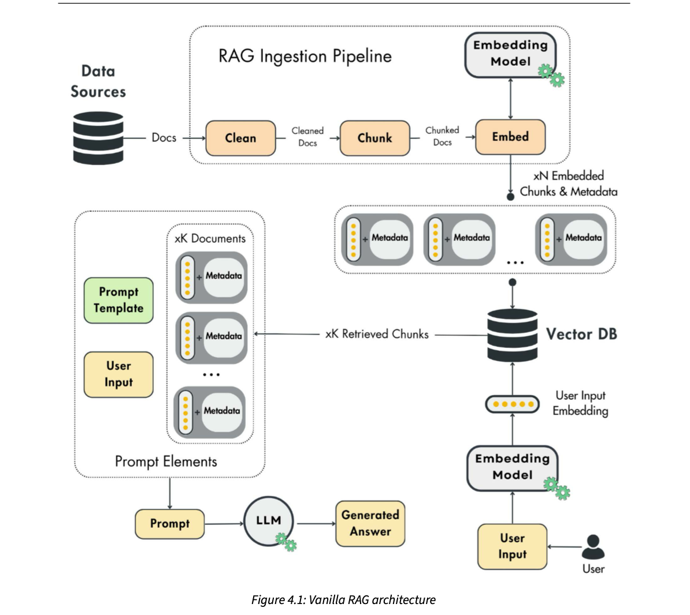
How to read this figure. Start top-left: Data Sources send Docs into the dotted RAG Ingestion Pipeline box: Clean → Cleaned Docs → Chunk → Chunked Docs → Embed, which talks to an Embedding Model (the gear icon = a model). Out come ×N embedded chunks & metadata: each little card is a vector (the column of yellow dots) plus a metadata blob, and they are stored in the Vector DB. Now the bottom-right: a User types User Input, which goes through the same Embedding Model into a User Input Embedding that queries the Vector DB. It returns ×K retrieved chunks (K is much smaller than N) to the left box, Prompt Elements, next to the Prompt Template and the User Input. Together they make the Prompt → LLM → Generated Answer. Notice there are two embedding-model boxes: they must be the same model (plate 6).
When do you need RAG? Whenever your app needs external information. The book's examples: a financial assistant needs the latest news, reports and prices; a travel recommender must retrieve and parse lists of attractions, restaurants and activities. LLMs don't see your specific data at training time, so most generative AI projects end up with some RAG strategy.
A railway enquiry counter. Overnight, the back office updates the timetable binder (ingestion). A passenger asks "next train to Pune?" (user input). The clerk flips to the right pages (retrieval), reads them with the question in mind (augment) and answers (generation). Where it breaks: the clerk understands the binder; the "flip to the right pages" step in RAG is a maths operation on vectors that can pick pages that only look similar.
The split into three modules is a time split: ingestion runs offline and ahead of time (slow, heavy work is fine), while retrieval and generation run online per request (must be fast). Because they share only the vector DB and the embedding model, you can scale, deploy and change them separately.
"Draw a RAG system." → "Offline: sources → clean → chunk → embed → upsert vectors plus metadata into a vector DB. Online: embed the query with the same model, fetch top-K by cosine similarity, fill a prompt template with question plus chunks, call the LLM, return the answer with sources." Mention that they're independently deployable and that the embedding model is the shared contract.
The RAG ingestion pipeline pulls raw documents from data sources (a data warehouse, a data lake, web pages…), cleans them, chunks them (splits them into smaller sections) and embeds them. Finally it loads the embedded chunks into a vector DB or similar vector storage. It has five modules:
| Module | What it does | Details the book gives |
|---|---|---|
| Data extraction | Gathers all needed data from DBs, APIs or web pages. | Depends heavily on your data. Can be as easy as querying your warehouse, or as hard as crawling Wikipedia. |
| Cleaning | Standardises text and removes unwanted characters. | Remove invalid characters such as non-ASCII and bold/italic Unicode characters. Another popular trick: replace URLs with placeholders. The right strategy depends on the data source and the embedding model. |
| Chunking | Splits cleaned documents into smaller ones. | Two reasons: (1) the text must not exceed the embedding model's maximum input size; (2) to keep semantically related regions together. For a book chapter, the best way is to group similar paragraphs into the same chunk, so retrieval adds only the essential data to the prompt. |
| Embedding | Uses an embedding model to turn each chunk's content (text, images, audio…) into a dense vector packed with meaning. | Plates 8–11 explain embeddings. |
| Loading | Stores each embedded chunk with a metadata document. | Metadata holds the embedded content, the URL of the source and the publish date. The embedding is the index used to find similar chunks; the metadata is what you read to augment the prompt. |
Result: raw documents in, a filled vector DB out. Next comes getting the right data back out (plate 6).
Words are coloured by chunk. Red-dashed words are the overlap (also in the previous chunk). The key fact "the refund window is 30 days" is marked green: watch whether any single chunk contains all of it.
Toy text and word-based splitting (modelled). Real splitters count characters or tokens; the trade-offs are the same.
Raw: 𝗕𝗶𝗴 news 🚀 read more at https://medium.com/@paul/rag-101 — it's 𝘳𝘦𝘢𝘭𝘭𝘺 good
After cleaning: Big news read more at [URL] - it's really good
The "mathematical bold/italic" letters are separate Unicode characters that an embedding model may split into odd tokens; normalising them to plain ASCII keeps the meaning. The emoji adds no meaning for retrieval, and the long URL wastes tokens, so it becomes a placeholder.
Example line is ours (modelled); the cleaning choices are the book's.
Making a library catalogue. Collect books from donors (extract), wipe off stickers and scribbles (clean), cut each book into index cards by topic (chunk), give each card a shelf code that puts similar cards near each other (embed), and file the cards with a note of title, page and date (load). Where it breaks: a librarian's shelf code is one word; an embedding is hundreds of numbers, and "near" is measured mathematically.
An embedding squeezes a whole chunk into one fixed-size vector. If a chunk mixes three topics, its vector is a blurry average of all three and matches none of them well. If a chunk is too small, it loses the context that makes it meaningful. Chunk size is the dial between "precise but context-poor" and "rich but blurry".
"How do you choose chunk size?" → "Respect the embedding model's max input length first. Then follow document structure (paragraphs, sections, code blocks) rather than a blind fixed window, add a small overlap so facts on boundaries survive, and tune size by measuring retrieval quality on real queries. Store metadata like source URL and date with every chunk for filtering and citations."
The retrieval part takes the user's input (text, image, audio…), embeds it, and asks the vector DB for vectors similar to it. Its main job is to project the input into the same vector space as the embeddings stored as the index. Then it compares the query vector with the stored ones and returns the top K most similar entries, which become the content that augments the prompt.
To compare two vectors you need a distance metric: Euclidean or Manhattan distance, for example. The most popular is the cosine distance: 1 minus the cosine of the angle between the two vectors. Written out (the formula in the PDF is garbled, so here it is in plain form):
The book says this ranges from −1 to 1: −1 when A and B point in opposite directions, 0 when they are orthogonal (at right angles), 1 when they point the same way. Strictly, that range describes the cosine similarity; the distance (1 minus it) runs from 0 (same direction) to 2 (opposite). Both say the same thing from opposite ends.
Cosine usually works well in non-linear, complex vector spaces, but the right metric depends on your data and embedding model.
The critical rule: the user's input and the stored embeddings must be in the same vector space, or distances mean nothing. So preprocess the query exactly like the documents in ingestion: same cleaning, chunking (if needed) and embedding, with the same functions, models and hyperparameters. This mirrors classic ML, where features must be computed the same way at training and inference; if not, you get wrong results, a problem called training-serving skew.
2-D toy (modelled). Real embeddings have 384–1,536+ dimensions, but the maths is identical. Try "B 3× shorter": cosine stays 1 while Euclidean distance grows, because cosine ignores length.
A = (3, 4), B = (4, 3). A·B = 3·4 + 4·3 = 24. ‖A‖ = ‖B‖ = 5. Similarity = 24 / 25 = 0.96 → distance = 0.04: very close.
A = (3, 4), C = (−4, 3). A·C = −12 + 12 = 0 → similarity 0 (orthogonal), distance 1: unrelated.
Two people pointing at the sky from the same terrace. If they point at the same star, their arms make a small angle, however long their arms are. Cosine measures only that angle. Where it breaks: in a real embedding space "direction" is spread over hundreds of axes nobody can name.
An embedding model is trained so that texts with similar meaning point in similar directions. A different model (or the same model fed text cleaned differently) builds a different space, where "direction 17" means something else. Comparing a query from space X with documents from space Y is like comparing GPS coordinates with a pincode: both numbers, no shared meaning. That's why the embedding model id is stored with every chunk (plate 39).
"Why cosine and not Euclidean?" → "Cosine compares direction and ignores vector length, which suits text embeddings where length isn't meaningful. (Beyond the book: if vectors are L2-normalised, cosine, dot product and Euclidean give the same ranking.) Whatever you pick, the query must be embedded with the same model and preprocessing as the documents, otherwise you get training-serving skew."
The last stage takes the user's input and the retrieved data, passes them to an LLM, and generates a useful answer. The final prompt is a system template and a prompt template, filled in with the user's query and the retrieved context. An app may have one template or several. Most prompt engineering happens at the template level.
The book shows a dummy example. The idea, in our own words and names:
SYSTEM = "You are a polite assistant that answers user questions."
TEMPLATE = """Use only the context below to answer. If the context is not
enough, reply exactly: "I don't know."
Context: {context}
Question: {question}"""
question = "How long is the refund window?"
context = search_chunks(question) # the retrieval module
prompt = SYSTEM + "\n" + TEMPLATE.format(context=context, question=question)
answer = call_llm(prompt) # the generation stepSYSTEM sets the assistant's general behaviour.TEMPLATE holds the RAG rule: answer only from context, otherwise say "I don't know". This is the hallucination guard from plate 3.search_chunks is retrieval (plate 6); .format is the "augment"; call_llm is the "generate".Version your templates. As templates change, track and version each change following MLOps (machine learning operations) practice, so you always know which LLM version and which template version produced a given answer, at training or inference time. Options: Git, store templates in a DB, or a prompt-management tool such as LangFuse.
The section closes by naming what most affects RAG accuracy: the embeddings of the external data (usually in a vector DB), the embedding of the query, and the similarity function (such as cosine) between them. That's why the chapter now zooms into embeddings.
Toy chunks and outcomes (modelled). Note how the readout records the template version with the answer.
A wedding invitation card printer keeps one card design (template) and fills in names, date and venue for each family. Change the design and you'd want to know which families got the old card. Where it breaks: a card is fixed text; a prompt change can quietly change every answer's quality, which is why versioning matters more here.
The LLM sees one flat string. The template's job is to separate instructions from data clearly so the model knows what is rule and what is evidence. Template changes behave like code changes: they can fix or break answers across all users at once, hence versioning and evaluation per version.
"How do you manage prompts in production?" → "Templates live outside business code: in Git or a prompt registry like LangFuse, each with a version. Every logged answer records model version plus template version so regressions are traceable and A/B testable. The RAG template restricts answers to retrieved context and defines the fallback." In an LLM gateway this is the same idea as versioned routing config.
The friendly version first: if you want a computer to "understand" the world, an embedding is like a translator that turns things into a numerical code. The code is not random: similar words or items get codes that are close to each other, like a map where words with similar meanings sit in the same neighbourhood.
The formal version: embeddings are dense numerical representations of objects (words, images, items in a recommender…) encoded as vectors in a continuous vector space. The transformation captures semantic meaning and the relationships between objects. In NLP (natural language processing), embeddings place semantically similar words close together.
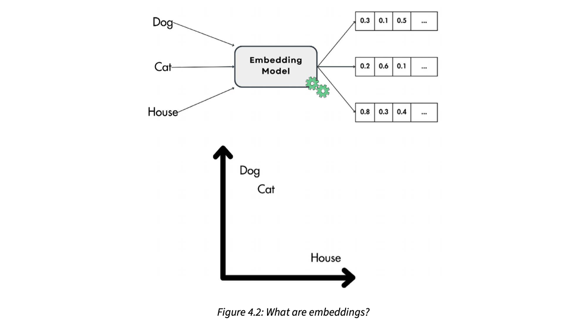
How to read this figure. Top half: three inputs (Dog, Cat, House) pass through one Embedding Model and each leaves as a row of numbers (0.3, 0.1, 0.5, … ; the "…" means many more dimensions). Bottom half: those vectors drawn on two axes. Dog and Cat land close together (both pets, both animals); House lands far away. The figure's point is only this: closeness on the plot = closeness in meaning.
Visualising embeddings. A popular way to understand and evaluate embeddings is to plot them. But embeddings usually have 64 to 2,048 dimensions, so you must project them down to 2D or 3D first.
Algorithms like PCA, UMAP and t-SNE reduce the number of input variables (features) while keeping the data's essential patterns, structure and relationships. Lower-dimensional data is easier to visualise, interpret and process, with minimal loss of important information. They help with the "curse of dimensionality", improve computational efficiency, and often improve ML performance.
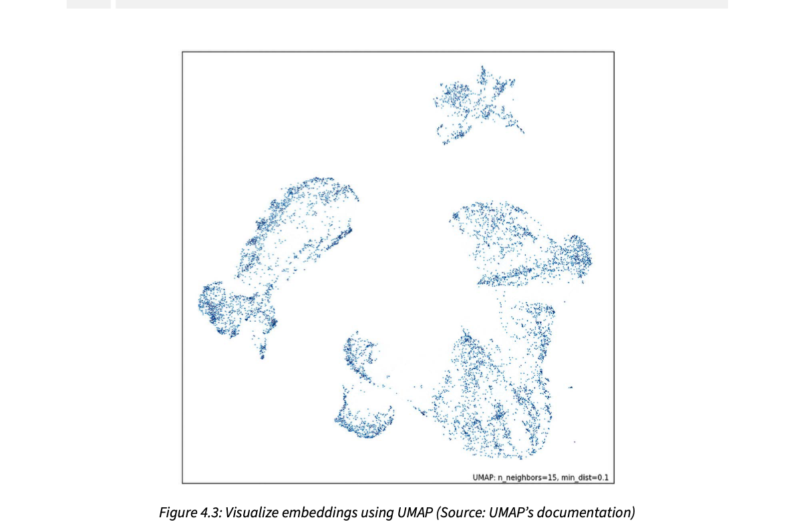
How to read this figure. Each blue dot is one high-dimensional vector, squashed to 2D by UMAP (settings in the corner: n_neighbors=15, min_dist=0.1). The dots form about six separate islands. Points on the same island were close in the original space, so they are probably similar items (for example, the same topic or class). The empty gaps between islands say "these groups are different". The axes have no meaning on their own; only relative closeness does.
Click a word. Its 3 nearest neighbours (by cosine) light up green. Words were placed by hand (modelled), like the bottom half of Figure 4.2.
A Mumbai local train map but drawn by meaning, not geography: "dosa", "idli" and "vada" sit at neighbouring stations; "laptop" and "keyboard" are on another line; "chai" sits between food and "morning". Where it breaks: a real embedding has hundreds of "lines" at once, and one word (like "Apple") can sit near both fruits and phones.
"What is an embedding?" → "A dense, fixed-length vector produced by a trained model, where geometric closeness reflects semantic similarity. For text, typical sizes are a few hundred to a couple of thousand dimensions. You visualise them with UMAP or t-SNE; UMAP keeps global structure better and is more stable."
Reason 1 · models only eat numbers. ML models work only with numerical values. Tabular data is usually numeric already, but words, images and audio are not. Embeddings make them numeric. In a transformer, the input text is tokenised and each token has an associated embedding; the model's input is simply a sequence of embeddings, which the network's dense layers can process easily.
So embeddings can encode any categorical variable for an ML model. Why not simpler methods such as one-hot encoding? With high-cardinality categories (many unique values, like a vocabulary) you hit the curse of dimensionality. The book's numbers: a 10,000-token vocabulary makes each token a vector of length 10,000; a sequence of N tokens becomes N × 10,000 inputs; with N ≥ 100, as is common for text, the input is too large to use. Other classical methods that avoid the size problem, such as hashing, lose the semantic relationships between vectors.
Embeddings let you encode categorical variables while controlling the output dimension, and they compress information into a low-dimensional space far more cleverly than naive hashing.
Reason 2 · compression of meaning. Embedding an input reduces its dimension and packs its meaning into a dense vector. This is very common with images: a CNN (convolutional neural network) encoder maps a high-dimensional image into an embedding, which a later part of the network uses for classification or regression.
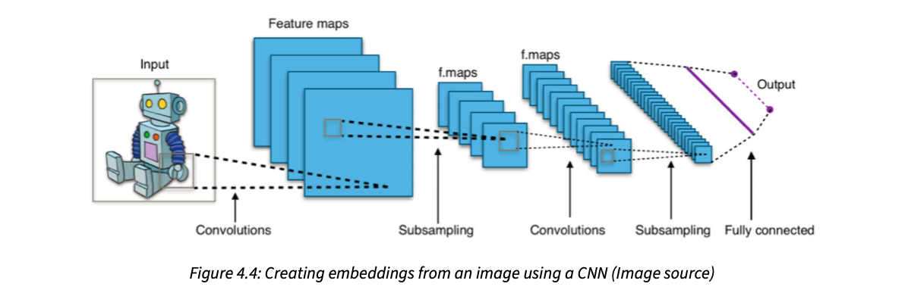
How to read this figure. Left to right. The Input image (a toy robot) goes through Convolutions, producing a stack of big feature maps. The small grey squares are receptive fields: each square of one layer feeds one neuron of the next (the dashed lines). Subsampling shrinks the maps (fewer pixels, focus on the important details). More convolutions make more maps (the stacks get deeper), as the network learns more complex features. Another subsampling makes them tiny. Finally a fully connected layer turns everything into the Output: one vector, the image's embedding. Two things happen as you go right: the picture gets smaller, the number of features grows.
Book's case: vocabulary 10,000 and N = 100 → 1,000,000 one-hot inputs. Collision estimate uses the birthday formula (modelled).
One-hot is like giving each of India's 1.4 billion people a form with 1.4 billion tick-boxes and ticking one. Hashing is like grouping people by the last 3 digits of their phone number: compact, but strangers share a bucket. An embedding is like a short profile (age, city, language, job…): a few hundred numbers, and similar people get similar profiles. Where it breaks: embedding dimensions are learned, not named like "age".
One-hot vectors are all at the same distance from each other, so "cat" is as far from "kitten" as from "tractor": no meaning. Embeddings are learned during training so that items used in similar contexts get similar vectors. That learned geometry is the whole value.
"Why embeddings over one-hot?" → "One-hot grows with cardinality and every pair is equally distant, so it carries no similarity. Hashing fixes the size but collides and is uninterpretable. Embeddings give a fixed, small dimension and a learned geometry where distance means similarity."
Embeddings come from deep learning models that understand the context and meaning of the input and project it into a continuous vector space. Different models suit different input types, so understand your data and what you need from it before picking an embedding model.
Load all-MiniLM-L6-v2, embed three sentences, and compare each with each. Our shortened version with the same calls:
from sentence_transformers import SentenceTransformer
encoder = SentenceTransformer("all-MiniLM-L6-v2")
texts = ["The dog sits outside waiting for a treat.",
"I am going swimming.",
"The dog is swimming."]
vecs = encoder.encode(texts) # shape (3, 384): 3 sentences, 384 numbers each
sims = encoder.similarity(vecs, vecs) # 3×3 cosine-similarity matrixThe book's printed output: shape [3, 384] and the matrix below. A sentence compared with itself is always 1. Sentences 1 and 2 share nothing, so ≈ 0 (−0.0389). Sentences 1 and 3 share "dog", so higher (0.2692); sentences 2 and 3 share "swimming", highest of the pairs (0.3837).
Choosing a model. The best model changes over time and with your use case. Compare models on the MTEB (Massive Text Embedding Benchmark) leaderboard on Hugging Face. You may pick the best-performing, the most accurate, or the one with the smallest memory footprint: it depends on your requirements (accuracy, hardware). Hugging Face and Sentence Transformers make swapping models easy, so experiment. (The book notes these snippets run in the book's shared virtual environment.)
The book's CLIP example downloads a "crazy cat" picture from the book's GitHub repo, embeds it with clip-ViT-B-32, embeds three captions (text shape (3, 512)) and compares:
clip = SentenceTransformer("clip-ViT-B-32")
img_vec = clip.encode(cat_image) # a PIL image
txt_vecs = clip.encode(["A crazy cat smiling.",
"A white and brown cat with a yellow bandana.",
"A man eating in the garden."])
clip.similarity(img_vec, txt_vecs) # 1×3 scoresBook's output: 0.3068, 0.3300, 0.1719. The most detailed correct caption wins; the unrelated one scores lowest. CLIP scores are naturally lower than text-text scores, so compare them relatively.
Embeddings can be computed for almost every kind of digital data: words, sentences, documents, images, videos and graphs. The crucial rule: to measure distance between two different data types (say, a sentence and an image) you need a specialised model such as CLIP, built to project both into the same space.
CLIP is like a bilingual guide in Jaipur who can match a tourist's spoken description ("pink palace with many windows") to the right photo (Hawa Mahal). Two separate guides, one for words and one for photos, could each describe things well, but couldn't compare across. Where it breaks: the guide "understands"; CLIP only learned which captions went with which images in its training data.
A sentence-embedding model runs a transformer encoder over the tokens and then pools (e.g., averages) the per-token vectors into one vector. It was trained with pairs of similar and dissimilar sentences so that cosine similarity reflects meaning. CLIP was trained the same contrastive way on image-caption pairs, pulling matching pairs together and pushing mismatched ones apart, in one shared space.
"How would you pick an embedding model for RAG?" → "Start from MTEB retrieval scores for my language and domain, then check dimension (storage and latency), max input length (sets chunk size), licence and hosting. Evaluate two or three candidates on my own query–document pairs, because leaderboard rank doesn't always transfer. For multimodal search, use a joint model like CLIP."
Thanks to the generative AI wave (which uses RAG), embeddings became hugely popular in information retrieval: semantic search over text, code, images and audio, and long-term memory for agents. But they were heavily used before generative AI too:
The last piece needed to understand RAG: how vector DBs use embeddings to retrieve data (plate 12).
Pick a support message. Each class label and the message are 3-number toy vectors (modelled); the class with the highest cosine wins. No training examples needed, which is what "zero-shot" means.
A post office sorter who has never seen this particular letter but reads the address and drops it in the bag whose label is "closest": Payments, Delivery, App bugs. Where it breaks: if two labels are vague ("Issues" vs "Problems") their vectors are nearly identical and the sorter flips a coin.
"Name uses of embeddings beyond RAG." → "Semantic search, agent long-term memory, recommendations, deduplication and clustering, anomaly detection, features for classifiers, and zero-shot classification by nearest label." Agent memory is the same RAG machinery: store past turns or facts as vectors, retrieve the relevant ones per turn.
Vector DBs are databases built to store, index and retrieve vector embeddings efficiently. Traditional scalar-based DBs struggle with vector data, so vector DBs matter for jobs like real-time semantic search.
Index vs database. A standalone vector index such as FAISS is good at similarity search, but it lacks the data-management features of a full vector DB: CRUD operations (create, read, update, delete), metadata filtering, scalability, real-time updates, backups, ecosystem integration and data security. That's why vector DBs fit production better than bare indices.
How it works. A normal DB search returns the exact match for what you typed. A vector DB instead returns the closest neighbours of the query vector. Under the hood it uses ANN (approximate nearest neighbour) algorithms. ANN does not guarantee the true top matches, but exact nearest-neighbour search is too slow in practice, and experiments show approximate top matches work well enough. So the accuracy–latency trade-off favours ANN.
A typical vector DB workflow:
Metadata filtering. Vector DBs can filter by metadata before or after the vector search; each has performance and accuracy trade-offs. Queries therefore depend on a metadata index as well as the vector index.
Modelled: brute force = N × D multiply-adds per query, at ~10 GFLOP/s effective on one CPU core. HNSW visits roughly a few thousand vectors per query regardless of N (order of log N hops × neighbours). Real numbers vary by library and hardware.
Query: "posts about RAG" with filter author = Paul. The DB returns top-3.
Toy data (modelled). Pre-filtering searches only matching items (always fills top-K, but can be slower with very selective filters in some indexes); post-filtering searches everything and then drops non-matching hits (fast, but can return fewer than K).
Finding the most similar-looking face in a stadium of 50,000. Exact search: compare with every face. ANN: ask a steward who knows the stands; he sends you to the right block, then the right row, then you compare a few dozen faces. You might miss the single best match two blocks over, but you finish in a minute instead of a day. Where it breaks: a steward knows the stadium; an ANN index has to be built (and rebuilt as data changes).
In high dimensions, classic tree indexes (like k-d trees) stop pruning well, and exact search degrades to scanning everything. ANN indexes give up a little recall (the share of true neighbours found) for big speed gains, and expose a knob (e.g., HNSW's search breadth) to trade them.
"Why not just use FAISS?" → "FAISS is an index library: great search, but no CRUD, filtering, replication, backups or auth. A vector DB like Qdrant wraps an ANN index with those production features." "Pre- or post-filter?" → "Pre-filter guarantees K matching results; post-filter can under-fill when the filter is selective. (Beyond the book: modern engines like Qdrant filter during graph traversal to get both.)"
Vector DBs build their index and search it with several families of algorithms. The book lists four:
These let vector DBs handle complex, large-scale data for many AI/ML applications.
Red = query. The search starts at the entry point on the sparse top layer, hops to whichever neighbour is closer to the query, and when no neighbour is closer it drops down a layer (same node, denser graph) and continues. Layer 0 holds every point.
Toy graph of 26 points, each node linked to its 3 nearest in that layer (modelled). Real HNSW uses parameters like M (links per node) and ef (search breadth) and keeps a candidate list instead of a single current node; this shows the core idea.
Modelled: float32 = 4 bytes per number; PQ with 256 codes per sub-space = 1 byte per sub-vector, plus a small codebook.
HNSW is how you find a friend's house in a new city. Highway (top layer): drive to the right area fast. Main roads (middle layer): get to the right colony. Lanes (layer 0): walk to the exact door. LSH is like sorting houses by pincode: you only search your pincode. PQ is describing a house as "2BHK-blue-corner-3rd floor" instead of a full photo. Where it breaks: if the highway exit you took was slightly wrong, greedy lane-walking can end at a good house that isn't the very closest; that's the "approximate".
HNSW borrows from skip lists: each point is put on layer 0, and with shrinking probability also on higher layers. Upper layers have few, long-range links (big jumps); lower layers have many, short-range links (fine steps). Search cost grows roughly with log N instead of N. PQ trades exactness of each distance for memory; LSH trades recall for skipping most buckets; random projection trades a little distance accuracy for fewer dimensions.
"Explain HNSW in 30 seconds." → "A multi-layer proximity graph. Top layers are sparse with long links, bottom layer has all points with short links. Search greedily walks toward the query on the top layer, drops a layer when it can't improve, and repeats down to layer 0, keeping a candidate list of size ef. It gives high recall at roughly logarithmic cost; the price is memory for the graph and slower inserts." Often combined with PQ to cut memory.
Vector DBs share the operational features of standard DBs, which give performance, fault tolerance and easy management in production:
| Operation | What it means | Why it matters |
|---|---|---|
| Sharding and replication | Data is partitioned (sharded) across several nodes, and copied (replicated) across nodes. | Sharding gives scalability and high availability; replication keeps data intact and available when a node fails. |
| Monitoring | Continuous tracking of query latency and resource use (RAM, CPU, disk). | Keeps operations optimal and catches problems before users feel them. |
| Access control | Only authorised users can read or change data; includes role-based access control and other security protocols. | Protects sensitive information. |
| Backups | Regular, ideally automated, DB backups. | Disaster recovery: restore a previous state after corruption or loss. |
20 M chunks × 768 dims × 4 bytes ≈ 61 GB of raw vectors, plus the HNSW graph (roughly M = 16 links × 2 directions × 4 bytes ≈ 128 bytes/vector ≈ 2.6 GB) and payloads. Split over 4 shards → ~16 GB each, with replication factor 2 → 8 nodes of ~16 GB RAM each. Losing one node loses no data, and each query fans out to 4 shards in parallel.
A bank's locker room: lockers spread across branches (sharding), a duplicate key kept at a second branch (replication), CCTV and footfall counters (monitoring), only account holders with ID get in (access control), and a nightly ledger copy in the head office vault (backups). Where it breaks: lockers don't need rebuilding; a vector index may need re-indexing when you change the embedding model.
"What do you monitor on a vector DB?" → "p50/p95/p99 query latency, recall on a fixed probe set, RAM (indexes are memory-hungry), disk, insert throughput, and collection sizes per tenant. Plus backups with tested restores and RBAC per collection." In a multi-tenant RAG memory, per-tenant filtering or collections is also an access-control concern.
Vanilla RAG ignores several things that decide the quality of retrieval and of the answer:
Two conclusions follow. First, we need a solid evaluation module that measures the quality of retrieved data and of generated answers against the question (covered in Chapter 9). Second, we must improve the RAG algorithm itself to fix retrieval limits directly; these improvements are called advanced RAG. They act at three stages:
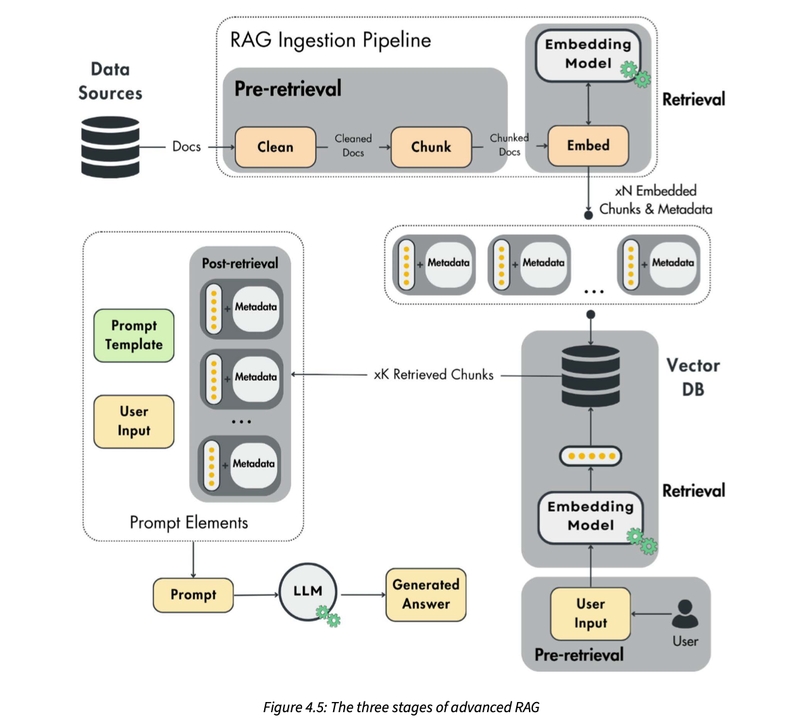
How to read this figure. It is Figure 4.1 again, with grey zones laid over it. Pre-retrieval appears twice: around Clean → Chunk in the ingestion pipeline (data indexing) and around the User Input at the bottom right (query optimisation). Retrieval also appears twice: around Embed + Embedding Model in ingestion, and around the Vector DB + query Embedding Model. Post-retrieval is the grey box around the ×K retrieved chunks inside Prompt Elements, before they become the prompt. So each stage touches both the offline and the online side where relevant.
The book is clear this is not an exhaustive list; the goal is intuition for what can be optimised. Examples are text-only, but the principles hold for any data type.
A restaurant kitchen. Pre-retrieval is prep: wash, cut and label ingredients well, and understand the order properly ("did they mean Jain?"). Retrieval is the cook fetching ingredients from the store. Post-retrieval is plating: remove what doesn't belong and arrange the best on top. Where it breaks: in a kitchen, a bad fetch is obvious; in RAG, a wrong chunk looks just as fluent as a right one.
"How would you improve a RAG system whose answers are mediocre?" → "First measure: retrieval recall and answer faithfulness separately. Then fix by stage: pre-retrieval (chunking, metadata, query rewriting), retrieval (better or fine-tuned embeddings, hybrid search, filters), post-retrieval (re-ranking, compression). Change one thing at a time against the eval set."
Pre-retrieval work happens in two places:
Because the index is built from embeddings of chunks, most data-indexing tricks are about preprocessing and structuring data better:
| Technique | What it does |
|---|---|
| Sliding window | Adds overlap between chunks so important context near boundaries is kept, improving retrieval accuracy. Especially useful for legal documents, scientific papers, customer-support logs and medical records, where key information often spans sections. The embedding is computed on the chunk including the overlapping part. (Play with overlap in plate 5's explorer.) |
| Enhancing data granularity | Data cleaning: remove irrelevant details, verify factual accuracy, update outdated information. A clean, accurate dataset gives sharper retrieval. |
| Metadata | Add tags such as dates, URLs, external IDs or chapter markers so results can be filtered efficiently at retrieval. |
| Optimising index structures | Try different index methods, such as various chunk sizes and multi-indexing strategies. |
| Small-to-big | Decouples the text used for retrieval from the text used in the prompt. Embed a small piece of text, but keep it plus a wider window around it in the metadata. Small chunks make retrieval more accurate; the bigger window gives the LLM more context. |
The intuition behind small-to-big: if you embed a whole long text, you add noise, or the text covers several topics, and the single embedding becomes a poor summary of its meaning.
Each sentence is embedded on its own (small). The best-matching sentence is found, then its neighbours (the "big" window) are sent to the LLM.
Match = keyword overlap stand-in for embedding similarity (modelled). Green = the small chunk that matched; tinted = the extra context window stored in metadata.
Searching a long WhatsApp group chat. You search for one message that matches ("refund 30 days") because short messages match cleanly. Then you scroll up and down a few messages to understand the context before replying. Small-to-big does both automatically. Where it breaks: if the neighbouring messages are off-topic chatter, the "big" window adds noise rather than context.
An embedding is roughly an average of meaning across its text. Averaging over one focused sentence gives a sharp vector; averaging over a page of mixed topics gives a blurry one that's "a bit similar" to everything. Small-to-big gets the sharp vector for matching and the rich text for answering.
"What is small-to-big / parent-document retrieval?" → "Index small units (sentences or small chunks) for precise matching, but store a pointer or wider window in metadata, and pass that larger context to the LLM. It separates the retrieval unit from the generation unit." Mention sliding-window overlap and metadata tags as cheap complementary wins.
On the query side, the book lists techniques that refine what gets retrieved:
Query routing. Depending on the input, you may need to talk to different categories of data and query each differently. A query router decides what action to take, like an if/else statement, but the decision is made in natural language instead of logical conditions.
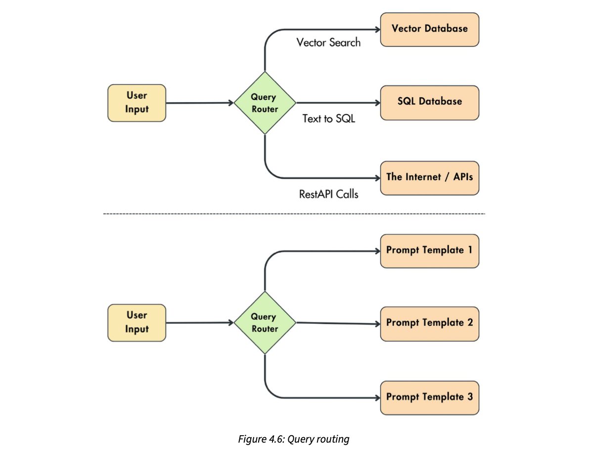
How to read this figure. Two uses of the same green diamond, the Query Router. Top: it picks a data source: a Vector Database (via vector search), an SQL Database (by translating the question to SQL, "text to SQL"), or the Internet / APIs (REST API calls). Bottom: it picks a prompt template (1, 2 or 3). The dashed line separates the two ideas; a real system can do both.
As the figure shows, the extra context may come from a vector DB, a standard SQL DB, or the internet. The router can also decide whether any context is needed, avoiding pointless calls to external storage. And it can pick the best prompt template: in the LLM Twin, writing an article paragraph, a post or a code snippet each needs a different template. Routing usually uses an LLM to choose the route, or embeddings, picking the route whose vectors are most similar to the query. In short: an if/else that understands natural language.
Query rewriting. The user's query may not match how your data is written. Rewriting reformulates it to match the index better:
HyDE (hypothetical document embeddings). An LLM writes a hypothetical answer to the query; then both the original query and that hypothetical answer go into retrieval.
Query expansion. Enrich the question with extra terms or concepts, giving different perspectives on it. Searching "disease"? Also include synonyms and related terms like "illnesses" or "ailments".
Self-query. Turn an unstructured query into a structured one. An LLM pulls out key entities, events and relationships, which become filter parameters that shrink the vector search space. Example: spot the city "Paris" in the query and add it as a filter.
Both data-indexing and query-optimisation techniques depend heavily on your data type, structure and source. No method always works; every use case has its quirks. Optimising pre-retrieval is experimental: try several methods, iterate, and keep what works.
Outputs written for this page to show each technique's shape (modelled), as an LLM might produce them.
A reception desk at a government office. The receptionist (router) hears your request and sends you to the right counter: Aadhaar, ration card or the website. If you say "my card thing", she rephrases it as "PAN correction form" (rewriting). If you're vague, she imagines what the finished form would look like and searches for that (HyDE). If you mention "Pune", she sends you only to the Pune desk (self-query). Where it breaks: each of these is an LLM call: extra latency and cost per question.
Questions and documents are written differently: questions are short and ask; documents are long and state. Their embeddings can sit far apart even when the document answers the question. HyDE bridges this by turning the question into answer-shaped text first. Expansion adds several viewpoints so at least one lands near the right chunks. Self-query moves exact constraints out of fuzzy vectors into exact metadata filters.
"Your RAG returns irrelevant chunks for short user questions. Ideas?" → "Query-side fixes: rewrite or expand the query with an LLM, try HyDE so the search uses answer-like text, and self-query to extract filters like author or date. Add a router so questions that need SQL or live APIs don't go to the vector DB at all." For a voice agent, routing also saves latency by skipping retrieval when no context is needed.
The retrieval step can be improved in two basic ways:
Both aim at one goal: better vector search via semantic similarity between query and indexed data.
Usually you fine-tune a pre-trained embedding model to fit your domain's jargon and nuances, especially where terms are new, evolving or rare. A cheaper alternative: instructor models (the book links hkunlp/instructor-xl), which steer embedding generation with an instruction/prompt aimed at your domain. Fine-tuning costs more compute and human effort, so this can be a good option.
The book's example embeds an AI article title with an instruction. The same idea in short:
from InstructorEmbedding import INSTRUCTOR
enc = INSTRUCTOR("hkunlp/instructor-base")
pair = ["Represent the title of an article about AI:", "RAG Fundamentals First"]
vec = enc.encode([pair]) # book's output shape: (1, 768)Each input is an [instruction, text] pair; the instruction tells the model what kind of representation to produce, so the same text can be embedded differently for different tasks. The book notes this needs a separate virtual environment (python3 -m venv instructor_venv and activate it) with pinned packages: sentence-transformers==2.2.2 and InstructorEmbedding==1.0.1.
In practice, start with filtered vector search or hybrid search: both are quick to implement and let you adjust based on performance. If results still disappoint, fine-tune the embedding model.
Query: error code E-4471 on checkout. Final score = alpha × vector score + (1 − alpha) × keyword score (both normalised to 0–1).
Scores invented for this page (modelled). Note the convention for alpha varies by DB; here 1 = pure vector, 0 = pure keyword.
Asking two shopkeepers in a market. One remembers exact item codes (keyword search); the other understands what you mean even if you describe it vaguely (vector search). Alpha is how much you trust each. For "Parle-G 800g" trust the first; for "biscuit for dipping in chai" trust the second. Where it breaks: their answers come on different scales, so you must normalise before mixing.
Keyword search (e.g., BM25) rewards rare exact terms like IDs, names and codes, which embeddings often blur because they were trained on general language. Vectors reward paraphrases keyword search can't see. Merging rankings covers each method's blind spot. Filtering, by contrast, is a hard constraint: it removes items rather than re-weighting them.
"When does pure vector search fail?" → "Exact identifiers, names, codes, rare jargon. Fix with hybrid search (BM25 plus vectors, merged with a weight like alpha or reciprocal rank fusion) and metadata filters for hard constraints. If domain language is the issue, fine-tune the embedding model or use an instruction-following embedder."
Post-retrieval optimisations act only on the retrieved data, so the LLM isn't hurt by a limited context window or noisy data. Retrieved context can be too large or contain irrelevant parts, and both distract the LLM. Two popular methods:
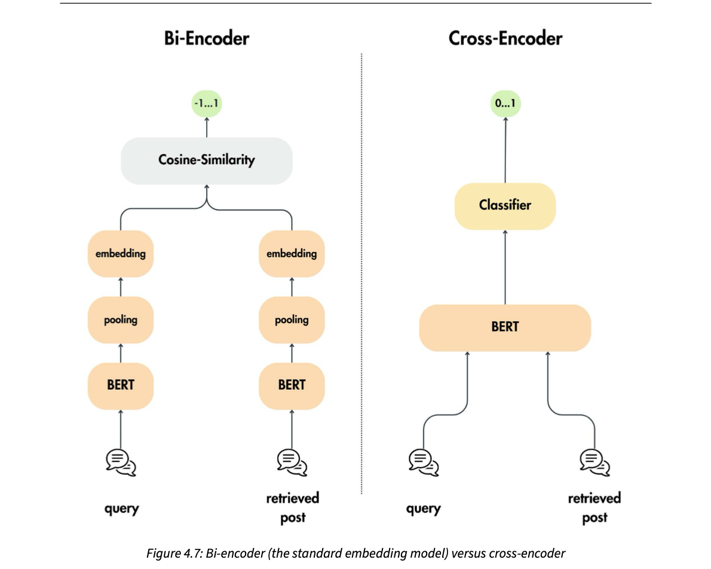
How to read this figure. Left, bi-encoder (the normal embedding model): the query and the retrieved post each go through their own pass of BERT → pooling → embedding. Only at the very top do they meet, in Cosine-Similarity, giving a score in −1…1. Because the two sides never see each other, document embeddings can be precomputed and stored. Right, cross-encoder: query and post enter one BERT together, so every word of the query can attend to every word of the post; a Classifier outputs a relevance score in 0…1. More accurate, but nothing can be precomputed: one full model run per (query, chunk) pair.
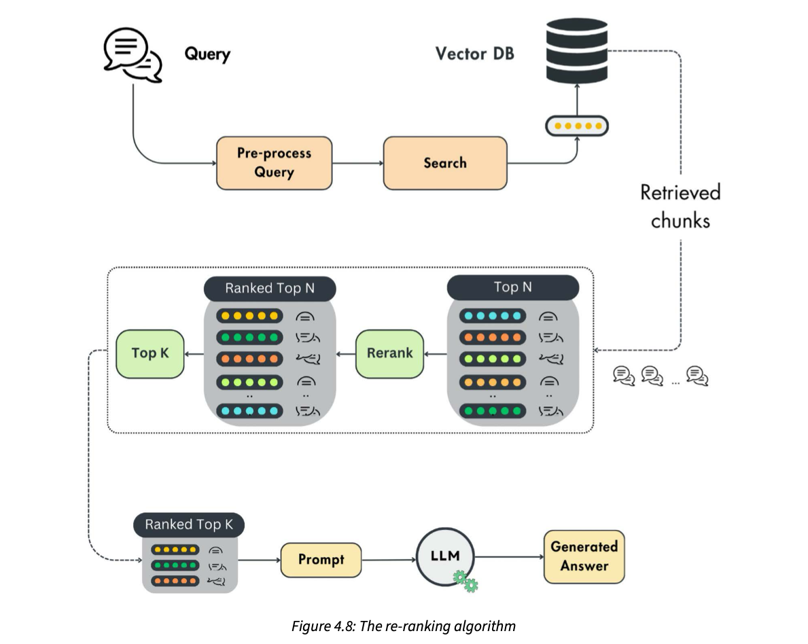
How to read this figure. Top row: Query → Pre-process Query → Search the Vector DB, which returns retrieved chunks (dashed line down the right). Middle box, read right to left: the Top N chunks (coloured bars = different chunks) go into Rerank, producing a Ranked Top N in a new order; then only the Top K survive. Bottom row: the Ranked Top K go into the Prompt → LLM → Generated Answer. N is larger than K: cast a wide, cheap net, then pick carefully.
Query: "how to avoid hallucinations in RAG". Scores invented (modelled). N = 6, K = 3.
These techniques are far from exhaustive; they show what you can and should optimise at each step. They also vary hugely by data type: with multimodal data (text plus images), most of the techniques above won't work as-is, because they were designed for text.
Section summary: advanced RAG improves three stages: pre-retrieval, retrieval and post-retrieval. That means preprocessing data for better indexing, adjusting queries for more accurate search, improving the embedding model, using classic DB filtering, and removing noisy data.
1 M chunks. A cross-encoder pass takes ~5 ms per (query, chunk) pair on a GPU. Re-ranking everything: 1,000,000 × 5 ms ≈ 83 minutes per question. Re-ranking only the top N = 50 from vector search: 50 × 5 ms = 0.25 s, or ~20 ms if batched. That's the whole reason for the two-stage design.
Campus hiring. HR screens 2,000 CVs by keyword and similarity in minutes (bi-encoder: each CV judged alone against a profile). The top 30 get a one-hour interview where the interviewer and candidate interact (cross-encoder: both seen together). Interviewing all 2,000 would be most accurate but impossible. Where it breaks: if the right candidate was dropped at screening, no interview can bring them back, so N must be big enough.
A bi-encoder compresses each text into one vector before comparing, so fine details of the query–document interaction are lost. A cross-encoder runs attention across both texts jointly, so it can notice that "avoid" in the query pairs with "reduce" in the chunk, or that a chunk mentions the term but argues the opposite. Prompt compression attacks the other cost: tokens in the context window, which drive latency and price and can dilute attention.
"Bi-encoder vs cross-encoder?" → "Bi-encoders embed query and document separately, so documents are precomputed and search is fast, but less precise. Cross-encoders score the pair jointly, more accurate but one forward pass per pair, so you only use them to re-rank the top N from the first stage, then keep top K for the prompt." The LLM Twin's Settings already name a cross-encoder for this (plate 28).
Now the theory gets applied to the LLM Twin, as a hands-on, end-to-end example. Any RAG system splits into two independent components:
Reminder of the system's design rules: it is an end-to-end ML system, so components talk through an interface (a contract) and each pipeline has a single responsibility. Here: ingest raw documents, preprocess them, load them into a vector DB.
The book's aim is a production-ready LLM Twin backed by an end-to-end ML system. This chapter designs a RAG feature pipeline that reads raw social-media data (articles, code repositories, posts) from the MongoDB data warehouse, then cleans, chunks and embeds the text, and loads it into a feature store. As set out in Chapter 1, the feature store is logical: ZenML artifacts plus a Qdrant vector DB.
The pipeline must be fully automated and keep the warehouse and the logical feature store in sync. At inference time, answers are built from what's in the vector DB, so how fast the two stay in sync directly affects RAG accuracy. Another key concern is automating the pipeline and integrating it with the rest of the ML system, keeping desynchronisation between the two stores to a minimum, because drift could harm the system's integrity.
So the target: a feature pipeline that constantly syncs the warehouse and the logical feature store while processing the data. Having data in a feature store is critical in production: the LLM Twin's inference pipeline queries it for RAG, and the training pipeline consumes tracked, versioned fine-tuning datasets from it.
Average staleness ≈ half the interval; worst case = full interval. Numbers are illustrative.
A school's central register (MongoDB warehouse) and the class teacher's attendance copy (feature store). If the copy is updated once a week, the teacher will call out names of students who left last Monday. The faster the copy syncs, the fewer wrong answers. Where it breaks: syncing every second costs effort; you pick a delay the use case can tolerate.
"What's the hard part of a RAG ingestion pipeline in production?" → "Not the embedding call; it's keeping the vector store in sync with the source of truth: new, updated and deleted records, at a freshness the product needs, with versioning so training and inference read the same features."
The feature store is the central access point for all features used by training and inference. The training pipeline takes cleaned data from it (stored as artifacts) to fine-tune LLMs. The inference pipeline queries the vector DB for chunked documents for RAG. That's why the book designs a feature pipeline, not only a RAG ingestion pipeline: in practice the feature pipeline holds several sub-components, and RAG logic is one of them.
The feature pipeline is mostly a mind map for navigating ML-system complexity: raw data in, features and optional labels out, stored in the feature store. A good rule: everything between the data warehouse and the feature store belongs to the feature-pipeline namespace, which may contain one or more sub-pipelines. Examples:
A purist's caveat. By standard conventions, text stored as strings is not a feature. A feature is what's fed directly into the model. To be strict, the instruct datasets or chunks would have to be tokenised, since tokens, not strings, go into the model. That would make the system more complex and less flexible, so the book tokenises at runtime instead. The lesson: don't be rigid about the FTI (feature/training/inference) architecture; adapt it to your use case.
All raw documents live in the MongoDB data warehouse, filled by the data collection ETL (extract, transform, load) pipeline from Chapter 3. That ETL pipeline crawls platforms such as Medium and Substack, standardises the data and loads it into MongoDB.
A central kitchen for a restaurant chain. Raw vegetables arrive at the warehouse (MongoDB). The prep kitchen (feature pipeline) washes, cuts and portions them into labelled trays in the cold store (feature store). Both the training school (training pipeline) and the outlets (inference pipeline) take trays only from the cold store. Where it breaks: strictly, "cooked" would be tokens; the book keeps trays at "cut vegetables" (strings) and cooks at the outlet (runtime tokenisation) for flexibility.
"What's a feature store in an LLM system?" → "The single place training and inference read processed data from. For the LLM Twin it's logical: Qdrant for online retrieval (chunks and cleaned docs) and versioned ZenML artifacts for offline training datasets. Everything between the warehouse and that store is the feature pipeline."
The design: a batch pipeline, scheduled to poll data from the MongoDB warehouse, process it, and load it into a Qdrant vector DB. The first question to ask: "Why batch?" To answer it, the next plates first explain how batch works and how it compares to streaming.
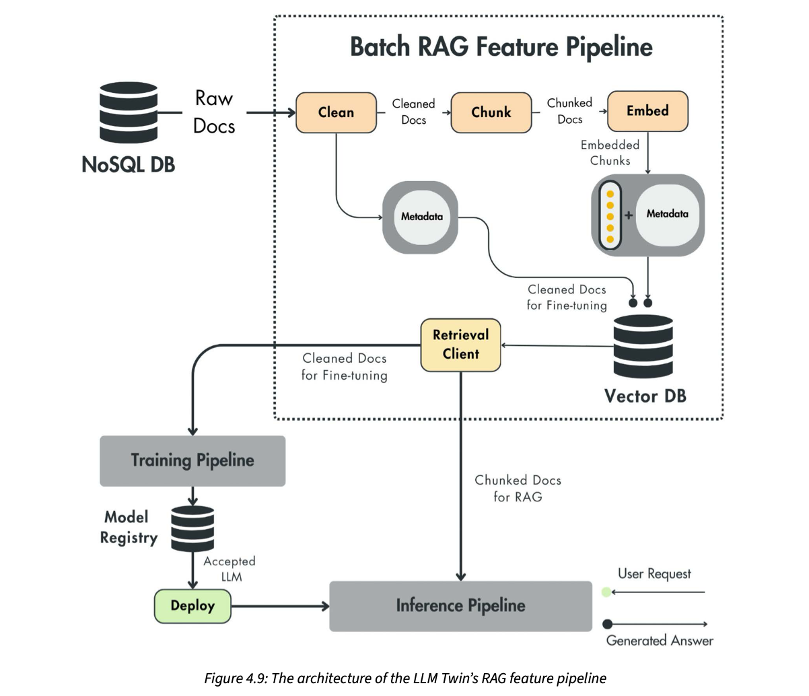
How to read this figure. The dotted box is the Batch RAG Feature Pipeline. Raw Docs come from the NoSQL DB (MongoDB) on the left. Inside: Clean → Chunk → Embed. Note the two outputs into the Vector DB: a branch right after Clean carries Metadata only (no vector), labelled Cleaned Docs for Fine-tuning; the Embed branch carries vector + metadata (embedded chunks). A Retrieval Client reads the Vector DB and serves two consumers outside the box: the Training Pipeline gets cleaned docs for fine-tuning → Model Registry → accepted LLM → Deploy; the Inference Pipeline gets chunked docs for RAG, takes the User Request and returns the Generated Answer. One pipeline, two snapshots, two consumers (plate 27).
A newspaper's night shift: every few hours it collects stories from reporters (MongoDB), edits them (clean), cuts them into columns (chunk), indexes them for the archive (embed), and stores both the full edited story and the indexed columns. The book-publishing wing reads full stories; the help desk searches columns. Where it breaks: a newspaper prints once; this pipeline re-runs and must upsert, not duplicate.
"Sketch the LLM Twin feature pipeline." → "Scheduled batch job: query MongoDB, clean per data category, write cleaned docs to Qdrant without vectors for the fine-tuning side, chunk and embed, write embedded chunks to Qdrant with vectors for RAG. Training reads cleaned docs; inference reads chunks; ZenML orchestrates and versions the artifacts."
A batch pipeline collects, processes and stores data at predefined intervals and in larger volumes ("batches"). This differs from real-time / streaming processing, where data is processed continuously as it arrives. A batch pipeline does three things:
Batch suits large volumes that don't need immediate processing. Advantages:
A dhobi (washerman) who collects clothes all week, washes them together on Sunday, and delivers on Monday. Washing in bulk is efficient and simple; but if you need your shirt on Wednesday, it's not ready. Where it breaks: data doesn't get dirty; the cost of waiting is staleness, not smell.
"When is batch the right choice?" → "When freshness of minutes to hours is acceptable, volume is large or processing is heavy, and you want simple, retryable, cheap jobs. You can always shorten the interval before moving to streaming."
Feature pipelines come in two main designs: batch and streaming. Streaming could fill a whole chapter, which hints at its extra complexity. Still, streaming is increasingly popular, so you need an intuition for it to choose well.
The core parts of a streaming app: a distributed event streaming platform such as Apache Kafka or Redpanda to store events from many clients, and a streaming engine such as Apache Flink or Bytewax to process them. To simplify, you can replace the event platform with a queue such as RabbitMQ that holds events until processed.
| Aspect | Batch pipeline | Streaming pipeline |
|---|---|---|
| Processing schedule | At regular intervals (every minute, hourly, daily). | Continuously, with minimal latency. |
| Efficiency | Handles large volumes more efficiently; optimised resources and parallel processing. | Handles single data points; immediate insights and updates; fast reaction to change. |
| Processing complexity | Can do complex transformations and aggregations. | Built for high-velocity streams with low latency. |
| Use cases | Where immediate processing isn't critical: data warehousing, reporting, ETL, feature pipelines. | Real-time analytics, real-time features, monitoring, event-driven architectures. |
| System complexity | Generally simpler to build and maintain. | More complex: low latency, fault tolerance and scalability are required; the tooling is more advanced and complicated. |
Table 4.1 (book, pdf p160), paraphrased: Batch versus streaming pipelines.
Batch's other drawback: redundant predictions. Besides staleness of predictions or features, batch often computes things nobody uses. A Netflix-style nightly job predicts for all users, but many won't log in that day, and those who do look only at the first few recommendations. Most of the compute is wasted.
Hence a popular strategy: start with batch (faster and easier to build); once the product exists, move gradually to streaming to cut costs and improve user experience.
Why the LLM Twin uses batch:
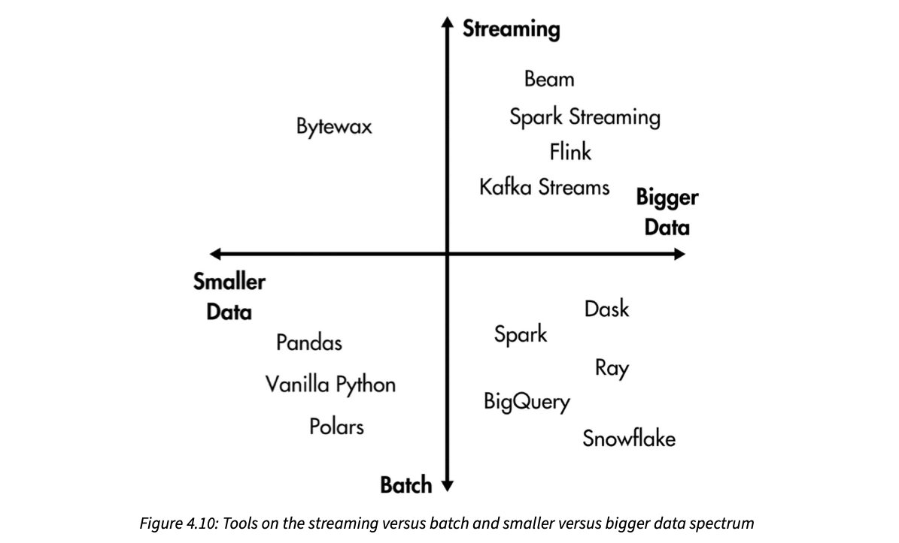
How to read this figure. Two axes: up = Streaming, down = Batch; left = Smaller Data, right = Bigger Data. Top-left (streaming, small): Bytewax. Top-right (streaming, big): Beam, Spark Streaming, Flink, Kafka Streams. Bottom-left (batch, small): Pandas, Vanilla Python, Polars. Bottom-right (batch, big): Spark, Dask, Ray, BigQuery, Snowflake. The LLM Twin sits bottom-left: vanilla Python plus generative-AI tools such as LangChain, Sentence Transformers and Unstructured. (The book's text calls this "Figure 8.10"; it's Figure 4.10.) Plate 26 discusses when moving to streaming makes sense.
Batch is the BEST bus that comes every 15 minutes on a fixed route; streaming is an auto-rickshaw that leaves the moment you get in. For a daily commute (LLM Twin), the bus is cheaper and simple. For a hospital emergency (fraud detection), you need the auto. Where it breaks: you can run buses every minute (the LLM Twin does), but beyond some volume that becomes more costly than switching modes.
Streaming needs durable logs (Kafka), per-event processing with state, exactly-once or idempotent writes, back-pressure, replay and ordering guarantees. Batch gets most of that for free: if a run fails, re-run it on the same input. That's where the "two times more complex" comes from.
"Batch or streaming for a RAG ingestion pipeline?" → "Batch first if minutes of staleness are acceptable and volume is modest; it's simpler and idempotent. Move to streaming, usually CDC from the source DB into Kafka and a stream processor like Flink or Bytewax, when you need seconds-level freshness, deletes propagated reliably, or when full rescans get too expensive."
Most RAG feature pipelines have five core steps; the LLM Twin's is no exception, so you can reuse this pattern for other RAG apps:
all-mpnet-base-v2 from Sentence Transformers as relatively tiny and able to run on most machines, and the model is set in a configuration file so you can swap in something stronger (find options on the MTEB leaderboard).Watch out · a mismatch in the book. The prose here names all-mpnet-base-v2, but the Settings class (plate 28) defaults to sentence-transformers/all-MiniLM-L6-v2, and the ZenML metadata in Figure 4.15 confirms MiniLM was used (embedding size 384, max input length 256). Since the model comes from config, both are possible; the screenshots show what actually ran.
The post, ids and vector values are invented (modelled); the step logic follows the book.
Packing for a train trip: gather what you need (extract), remove what's useless (clean), split into bags that fit the luggage rack (chunk, under the model's max size), label each bag by contents (embed), and write the coach and seat on each tag (metadata) before loading. Where it breaks: bags are physically limited; chunks are limited in tokens, which you only know after tokenising.
"Why store cleaned docs in a vector DB without vectors?" → "To keep one source of truth for features. Qdrant's payload store works like a NoSQL store, so the same system serves fine-tuning (cleaned docs) and RAG (embedded chunks), and both are written by the same pipeline run."
Data changes constantly, so DBs, data lakes, warehouses and feature stores drift out of sync. Change data capture (CDC) keeps two or more stores in sync without heavy compute and I/O overhead: it captures every CRUD operation on the source DB and replicates it on a target DB, optionally with preprocessing in between.
The same issue hits feature pipelines: how do you sync the warehouse with the feature store so data is fresh enough for your use case?
The LLM Twin's naïve choice. For simplicity, a batch pipeline triggered periodically or manually reads all raw data from the warehouse, processes it in batches, and inserts new or updates old records in Qdrant. Fine for thousands or tens of thousands of records, but it raises three questions:
CDC solves all three. Every CDC approach is either push or pull:
The main CDC patterns used in industry:
| Pattern | How | Pros | Cons |
|---|---|---|---|
| Timestamp-based | Add a modification-time column (often LAST_MODIFIED or LAST_UPDATED); downstream queries rows changed since its last check. | Simple to implement. | Tracks changes but not deletions; performance overhead from scanning whole tables. |
| Trigger-based | DB triggers write every INSERT, UPDATE or DELETE into a separate table, often called the event table. | Comprehensive change tracking. | Hurts DB performance: an extra write per event. |
| Log-based | Read the DB's transaction log (kept for recovery, with timestamps) and propagate changes in real time. | Minimal impact on the source, no extra processing there, captures all changes, no schema change. | No standard log format → vendor-specific implementations. |
The book recommends Confluent's article "What is Change Data Capture?" for more. With these in mind, the LLM Twin could easily move to a pull, timestamp-based strategy as data grows. Today it is still pull-based but checks no "last updated" field: it just pulls everything.
The industry's most popular and optimal technique is log-based: no extra I/O on the source, low latency, supports all CRUD operations. Its downside is development complexity: it needs a queue to capture every CRUD event and a streaming pipeline to process them. Since this is an LLM book, not a data-engineering book, they kept it simple, but you can upgrade when the current approach stops fitting.
Source events since the last sync, then pick a strategy. Green = target gets it right; red = missed or wrong.
Toy events and costs (modelled). "Full re-scan" upserts everything it reads but can't notice deletions unless it also diffs ids.
Keeping a branch office's copy of the HR register in sync with head office. Full re-scan: photocopy the whole register daily. Timestamp: ask for "pages edited since yesterday" (but torn-out pages leave no edit date, so deletions vanish). Trigger: every time HR writes anything, a clerk also writes it in a "changes" diary (extra work per entry). Log-based: read the security camera log of the register room, which already records everything (no extra work for HR, but every camera brand stores video differently). Where it breaks: the transaction log does exist for recovery, so reading it is truly "free" for the source; the camera analogy undersells that.
Databases write every change to a log first (write-ahead log in Postgres, binlog in MySQL, oplog/change streams in MongoDB) so they can recover after a crash. Log-based CDC reuses that stream: the order is exact, deletes are included, and the source does no extra work. The cost moves to the consumer side: a connector, a queue and a stream processor that must handle ordering and replays.
"How do you keep a vector index in sync with Postgres or MongoDB?" → "Log-based CDC: tail the WAL or change stream with something like Debezium into Kafka, and have a consumer that re-chunks and re-embeds on insert/update and deletes points on delete, idempotently keyed by document id. For small data, a scheduled pull with an updated_at watermark is fine, but it misses hard deletes." Beyond the book: MongoDB change streams make this especially easy for the LLM Twin.
The logical feature store keeps two snapshots of the data:
Why? Features should be read only from the feature store for training and inference. That makes the design consistent and cleaner.
Why not store cleaned data back in MongoDB? That would be an antipattern. The warehouse is shared across the whole company, so processing it for one use case is bad practice. Imagine a new summarisation use case that cleans differently: you'd add a "Cleaned Data" table prefixed with that use case's name, and repeat for every new use case. To avoid a spaghetti data warehouse, warehouse data stays generic, and is shaped for specific applications only downstream, here in the feature store.
And since a vector DB's metadata index can act as a NoSQL DB (plate 25), the cleaned data lives in Qdrant alongside the chunked and embedded versions.
Looking ahead: when the system is operationalised, the create-instruct-dataset pipeline (Chapter 5) reads the cleaned documents from Qdrant, processes them, and saves them as a versioned ZenML artifact; the training pipeline needs a dataset, not plain documents. So the logical feature store = Qdrant for online serving + ZenML artifacts for offline training.
cleaned_articles, cleaned_posts, cleaned_repositories · no vector index · read by Ch.5 → ZenML artifact → training.Collection names for the cleaned snapshot come from the book's Config classes (plate 34); the embedded chunk classes define their own collection names the same way (not printed in the chapter).
ZenML orchestrates the batch RAG feature pipeline. It can run on a schedule (e.g., every hour), be triggered manually, or be triggered after the ETL data-collection pipeline finishes. Orchestrating it in ZenML (or any orchestrator) operationalises the pipeline toward continuous training (CT). Orchestration, scheduling and CT are covered in Chapter 11.
A wholesale mandi (the warehouse) sells raw produce to everyone: hotels, juice shops, households. If the mandi started peeling oranges for one juice shop, it would soon need a separate peeled section for every customer. Instead each customer preps in their own kitchen (feature store). Where it breaks: data can be copied for free; produce can't, so storing two snapshots is cheap here.
"Why not write processed data back to the warehouse?" → "The warehouse is a shared, generic source of truth. Use-case-specific transformations belong downstream in that use case's feature store, otherwise the warehouse fills with per-team cleaned tables. Training and inference then read only from the feature store, which keeps them consistent."
The final part reviews the real code, showing how everything above was applied. It covers four things:
It goes top-down: first the Settings class and the ZenML pipeline, then deeper layers.
The project uses Pydantic Settings to define one global Settings class that loads sensitive and non-sensitive variables from a .env file. You also get Pydantic's type validation: if QDRANT_DATABASE_PORT is given a string instead of an integer, the program crashes at startup. That makes the whole app more deterministic and reliable.
from pydantic import BaseSettings # (pydantic v1 import, as in the book)
class AppConfig(BaseSettings):
class Config:
env_file = ".env" # values here override the defaults
env_file_encoding = "utf-8"
# RAG
TEXT_EMBEDDING_MODEL_ID: str = "sentence-transformers/all-MiniLM-L6-v2"
RERANKING_CROSS_ENCODER_MODEL_ID: str = "cross-encoder/ms-marco-MiniLM-L-4-v2"
RAG_MODEL_DEVICE: str = "cpu"
# Qdrant
USE_QDRANT_CLOUD: bool = False
QDRANT_DATABASE_HOST: str = "localhost"
QDRANT_DATABASE_PORT: int = 6333
QDRANT_CLOUD_URL: str = "str"
QDRANT_APIKEY: str | None = None
config = AppConfig() # one shared instance for the appcpu).localhost:6333) or Qdrant Cloud (URL + API key, which defaults to none).A railway reservation form that rejects "twenty-three" in the age box and insists on digits. Annoying for a second, but the train doesn't leave with a wrong berth assignment. Pydantic Settings is that strict form for config. Where it breaks: it checks types, not meaning: port 99999 is a valid int but not a valid port unless you add a constraint.
"How do you manage config and secrets in a Python service?" → "A typed settings class (Pydantic Settings) with defaults, overridden by environment variables or a .env file locally and a secret manager in prod. It fails fast on bad types at startup instead of failing deep inside a request. Model ids live in config so swapping models is a config change, not a code change."
The ZenML pipeline is the entry point of the RAG feature engineering pipeline. It mirrors the five phases: extract raw documents, clean, chunk, embed, and load into the logical feature store. Each call inside feature_engineering() is a ZenML step, a single unit of execution. Our version, same structure as the book's pipelines/feature_engineering.py:
from zenml import pipeline
from llm_engineering.interfaces.orchestrator.steps import feature_engineering as fe
@pipeline
def feature_engineering(author_full_names: list[str]) -> None:
raw = fe.query_data_warehouse(author_full_names) # extract
cleaned = fe.clean_documents(raw) # clean
done_1 = fe.load_to_vector_db(cleaned) # snapshot 1: cleaned docs
embedded = fe.chunk_and_embed(cleaned) # chunk + embed
done_2 = fe.load_to_vector_db(embedded) # snapshot 2: vectors
return [done_1.invocation_id, done_2.invocation_id]@pipeline tells ZenML to build a DAG (directed acyclic graph) from the step calls instead of running them as plain Python.load_to_vector_db is called twice: once for cleaned docs, once for embedded chunks. These are the two snapshots of plate 27.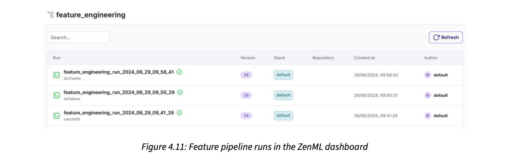
How to read this figure. The feature_engineering pipeline page lists three runs, named by timestamp (feature_engineering_run_2024_06_29_09_58_41, …09_50_29, …09_41_26), each with a short run id and a green tick (succeeded). Columns: Version 33 (pipeline version), Stack "default" (local infrastructure), Created at 29/06/2024 at about 09:41, 09:50 and 09:58, Author "default". Runs roughly every 9 minutes: someone was iterating.
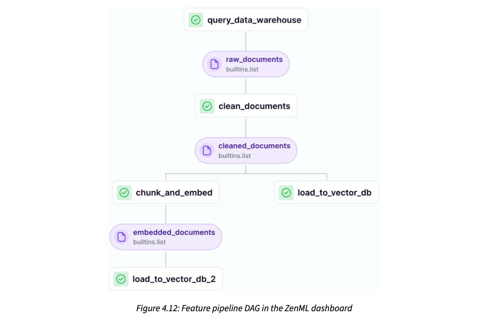
How to read this figure. White boxes with green ticks are steps; purple pills are artifacts (step outputs, type builtins.list). Read down: query_data_warehouse → raw_documents → clean_documents → cleaned_documents, which forks: right to load_to_vector_db (snapshot 1), left to chunk_and_embed → embedded_documents → load_to_vector_db_2 (ZenML auto-suffixes the second call of the same step). Anything a step returns is automatically saved as an artifact, stored in ZenML's artifact registry, versioned, and shareable across the app. (The book's text says "Figure 8.12"; it's Figure 4.12.)
All pipeline settings are function parameters; here only author_full_names. At runtime a YAML config file injects the values. The book's configs/feature_engineering.yaml lists the three authors so the feature store holds all their data:
parameters:
author_full_names:
- Alex Vesa
- Maxime Labonne
- Paul IusztinTo change inputs, pass a different file: feature_engineering.with_options(config_path="…/feature_engineering.yaml")(). The path can be hard-coded or come from the CLI; the book hard-codes it for simplicity and runs the pipeline with python -m tools.run --no-cache --run-feature-engineering, or the Poe the Poet shortcut poetry poe run-feature-engineering-pipeline. Adding a CLI argument for config_path would be easy. Step code lives under steps/feature_engineering.
Counts 76 and 2,373 are the book's (Figures 4.13–4.14); the rest of the run narration is ours.
A wedding caterer's job sheet: the steps (buy, wash, cook, pack) are fixed; the guest list comes on a separate slip (the YAML). New wedding, new slip, same job sheet. And every intermediate tray is labelled and kept (artifacts) so you can trace which batch made someone ill. Where it breaks: caterers throw trays away; ZenML keeps every version until you clean up.
"Why use an orchestrator like ZenML instead of a cron'd script?" → "You get a DAG of steps with automatic artifact versioning and lineage, caching, run history, metadata per step, config injection per run, and the same code can run locally or on a cloud stack. That makes pipelines reproducible and debuggable, which a cron script isn't."
A ZenML step is a Python function decorated with @step, just like the pipeline uses @pipeline. This step takes the authors' full names and:
UserDocument from first and last name and adds it to an authors list (if the user can't be resolved, it raises an error);@step
def query_data_warehouse(author_full_names: list[str]) -> Annotated[list, "raw_documents"]:
docs = []
for full_name in author_full_names:
first, last = utils.split_user_full_name(full_name)
user = UserDocument.get_or_create(first_name=first, last_name=last)
per_category = fetch_all_data(user) # {"articles": [...], "posts": [...], ...}
docs.extend(d for group in per_category.values() for d in group)
get_step_context().add_output_metadata(output_name="raw_documents",
metadata=_get_metadata(docs))
return docsAnnotated[list, "raw_documents"] names the output artifact, which is how the DAG in Figure 4.12 shows "raw_documents". get_step_context().add_output_metadata attaches the stats to that artifact.
Articles, posts and repositories sit in different collections, so there are three queries. Each one waits on network I/O and warehouse latency, not on the CPU. So fetch_all_data runs each query in its own thread using a thread pool. Total time becomes the max of the three calls, not their sum.
def fetch_all_data(user) -> dict[str, list]:
uid = str(user.id)
with ThreadPoolExecutor() as pool:
jobs = {pool.submit(_get_articles, uid): "articles",
pool.submit(_get_posts, uid): "posts",
pool.submit(_get_repositories, uid): "repositories"}
out = {}
for fut in as_completed(jobs):
name = jobs[fut]
try:
out[name] = fut.result()
except Exception:
logger.exception(f"{name} query failed")
out[name] = [] # one failed category doesn't kill the run
return outWhy threads, not processes? Threads are fine for I/O-bound calls in Python because waiting on I/O isn't blocked by the GIL (Global Interpreter Lock). Separate processes would add too much overhead: a process takes longer to start than a thread. Use processes only for CPU- or memory-bound work, which the GIL does slow down; each process has its own GIL, so e.g. processing a batch of documents or images already in memory parallelises properly across processes.
Latencies are inputs you set (modelled); thread start-up overhead is ignored.
_get_metadata() counts documents in total and per category (collection), and collects the unique author names per category:
def _get_metadata(docs) -> dict:
meta = {"num_documents": len(docs)}
for d in docs:
col = d.get_collection_name() # "articles", "posts", ...
bucket = meta.setdefault(col, {"num_documents": 0, "authors": []})
bucket["num_documents"] += 1
bucket["authors"].append(d.author_full_name)
for v in meta.values():
if isinstance(v, dict):
v["authors"] = list(set(v["authors"])) # de-duplicate names
return meta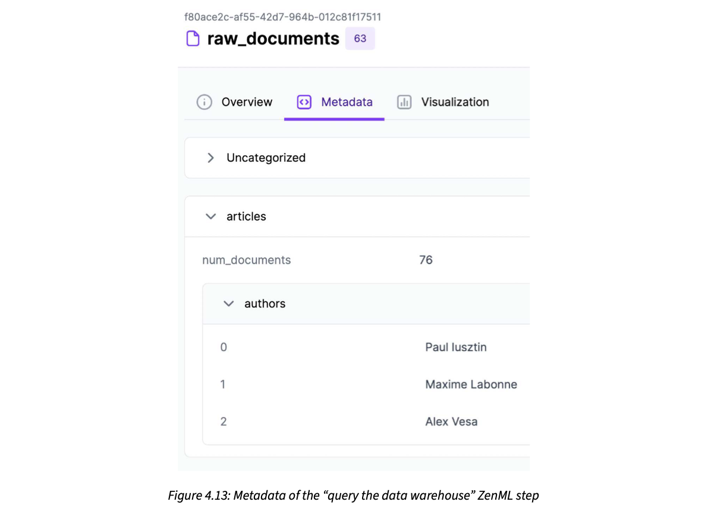
How to read this figure. This is the raw_documents artifact (the long id at the top is the artifact id; 63 is its version number). On the Metadata tab, the articles section shows num_documents = 76 and an authors list of three: Paul Iusztin, Maxime Labonne, Alex Vesa. So this run loaded 76 documents from 3 authors. The "Uncategorized" section (collapsed) holds the top-level fields like total num_documents. The book calls this very powerful for monitoring and debugging batch pipelines, and you can add anything that makes sense for your use case.
Ordering lunch from three restaurants on Swiggy at once instead of one after another: you wait for the slowest, not for all three added up. The phone (CPU) is idle while you wait; that's why threads are enough. Where it breaks: if you had to cook the food yourself (CPU-bound), three orders in parallel in one kitchen (one GIL) wouldn't go faster; you'd need three kitchens (processes).
"Threads or processes in Python?" → "Threads (or asyncio) for I/O-bound work like DB queries and HTTP calls; the GIL is released while waiting, so latency becomes the max not the sum. Processes for CPU-bound work like parsing or embedding on CPU, since each process has its own GIL. Processes cost more to start and to share data with." Same pattern you'd use to fan out tool calls in an agent.
The cleaning step loops over all documents and delegates the logic to a CleaningDispatcher, which knows which cleaning to apply for each data category. The point: be able to apply, now or later, different cleaning to articles, posts and code repositories.
@step
def clean_documents(docs: Annotated[list, "raw_documents"]) -> Annotated[list, "cleaned_documents"]:
cleaned = [CleaningDispatcher.dispatch(d) for d in docs] # category-aware cleaning
get_step_context().add_output_metadata(output_name="cleaned_documents",
metadata=_get_metadata(cleaned))
return cleanedraw_documents; output is named cleaned_documents. That's how ZenML wires the DAG.A hospital triage nurse doesn't treat anyone; she sends each patient to the right department. The cleaning step is the corridor; the dispatcher is the nurse; handlers are the departments. Where it breaks: a nurse can reconsider; the dispatcher's choice is a fixed lookup by category.
"Why keep the step thin?" → "Orchestration code should only wire inputs, outputs and metadata. Business logic lives in a domain/application layer that's testable without the orchestrator, so you could swap ZenML for Airflow without rewriting cleaning."
Like cleaning, chunking and embedding are delegated to dispatchers that know each data category. One difference: the chunking dispatcher returns a list (one document → many chunks).
@step
def chunk_and_embed(cleaned: Annotated[list, "cleaned_documents"]) -> Annotated[list, "embedded_documents"]:
meta = {"chunking": {}, "embedding": {}, "num_documents": len(cleaned)}
out = []
for doc in cleaned:
chunks = ChunkingDispatcher.dispatch(doc) # 1 doc → N chunks
meta["chunking"] = _add_chunks_metadata(chunks, meta["chunking"])
for group in utils.misc.batch(chunks, 10): # groups of 10
out.extend(EmbeddingDispatcher.dispatch(group)) # one model call per group
meta["embedding"] = _add_embeddings_metadata(out, meta["embedding"])
meta["num_chunks"] = len(out)
meta["num_embedded_chunks"] = len(out)
get_step_context().add_output_metadata(output_name="embedded_documents", metadata=meta)
return outbatch(chunks, 10) sends 10 chunks per embedding call; batching is much faster than one-by-one (plate 39).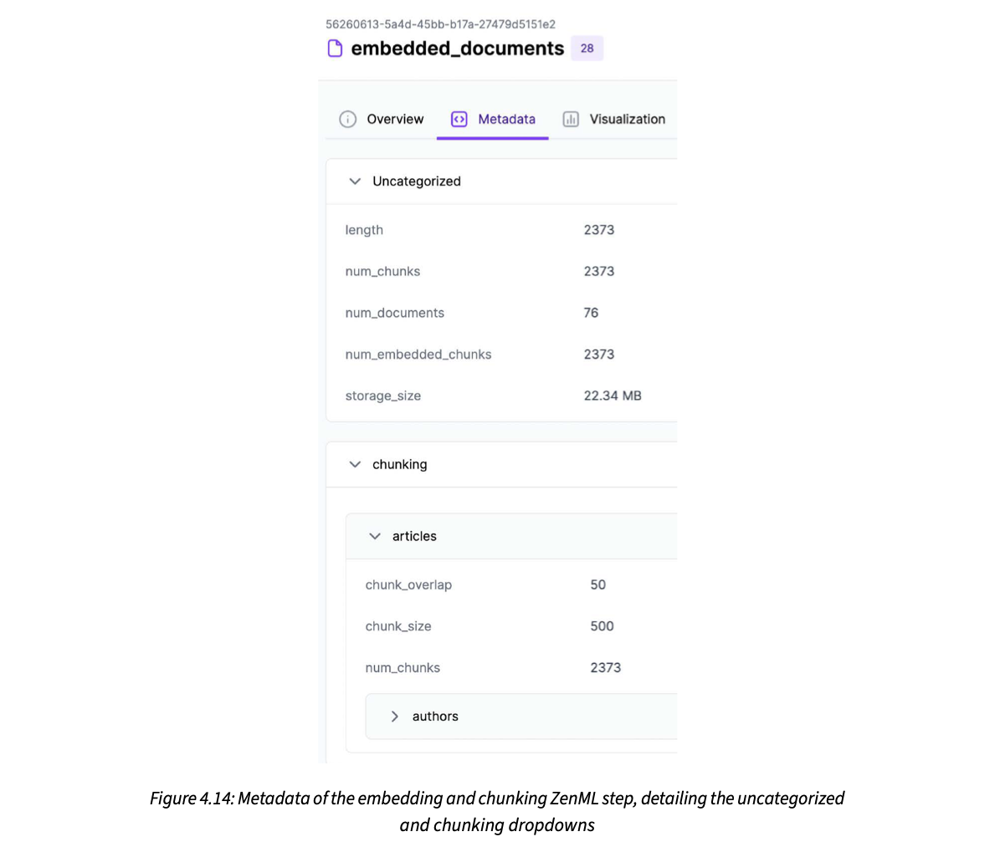
How to read this figure. Artifact embedded_documents, version 28. Uncategorized: length 2373, num_chunks 2373, num_documents 76, num_embedded_chunks 2373, storage_size 22.34 MB. So 76 documents became 2,373 chunks (about 31 per document), all embedded. chunking → articles: chunk_overlap 50, chunk_size 500, num_chunks 2373, plus a collapsed authors list. All chunks in this run were articles.
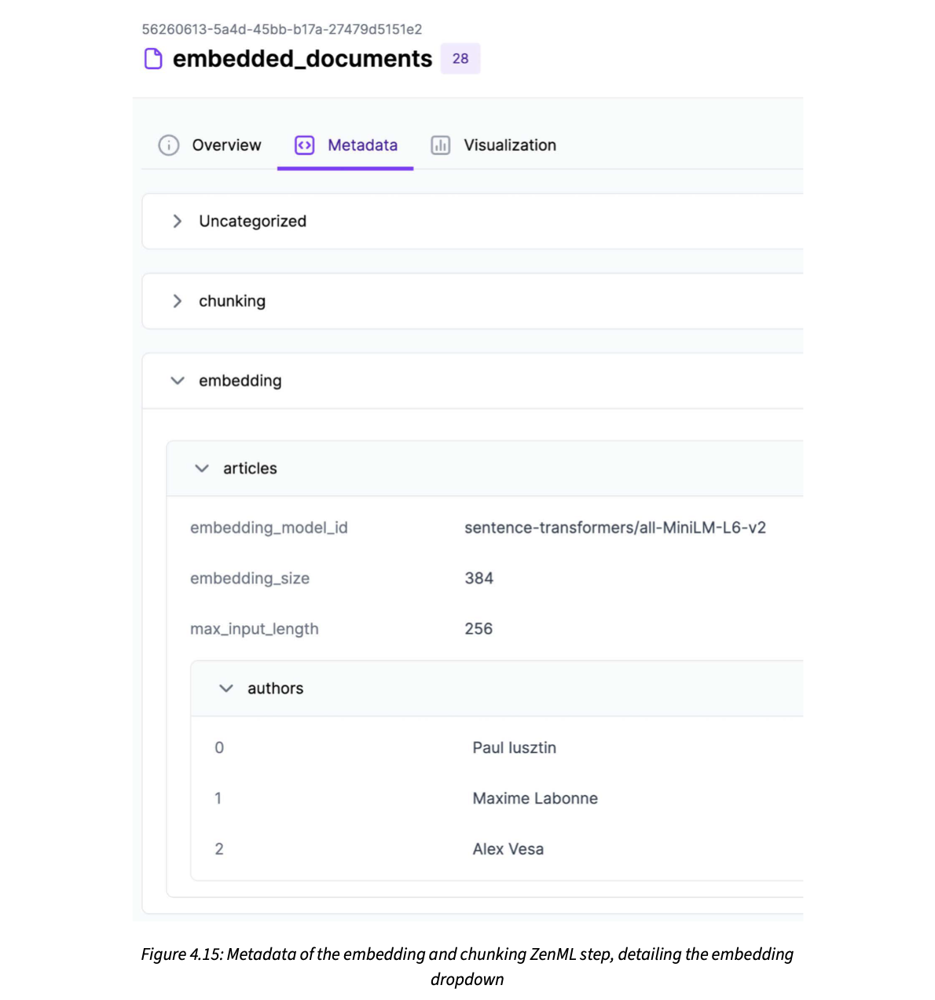
How to read this figure. Same artifact, now the embedding → articles section: embedding_model_id = sentence-transformers/all-MiniLM-L6-v2, embedding_size = 384, max_input_length = 256 (tokens), and the three authors. With this you can tell, months later, exactly which model made these vectors.
Watch out · chunk settings disagree. Figure 4.14 and the text say articles used chunk_size 500 / chunk_overlap 50 (the base handler's defaults). But the ArticleChunkingHandler code shown later (plate 38) overrides its metadata to min_length 1000 / max_length 1000 characters. The screenshot was likely taken from a version of the code that used the generic defaults for articles. Treat the code as one choice, the screenshot as another.
22.34 MB / 2,373 chunks ≈ 9.4 KB per chunk. A 384-dim float32 vector is 384 × 4 = 1.5 KB; the rest is the chunk text and metadata in the serialised artifact. If the model were swapped to a 1,024-dim one, vectors alone would grow to 4 KB each, ~2.7× more. (Arithmetic ours, from the book's numbers.)
Why bother with metadata? ML systems can break in production at any time due to drift or unhandled cases. Monitoring ingested data through step metadata can save days of debugging, which the book puts at tens of thousands of dollars or more for a business.
A courier hub's daily manifest: "76 parcels in, split into 2,373 packets, total 22 kg, packed with box type MiniLM-384." If tomorrow it says "76 in, 12 packets out", you know something broke before any customer complains. Where it breaks: the manifest tells you that counts changed, not why; you still need logs.
"What would you log in an ingestion pipeline?" → "Docs in, chunks out, chunks per doc, chunk settings, embedding model id, dimension and max length, storage size, failures per category. Store it with the artifact version so you can compare runs and catch drift, like a sudden drop in chunks per doc."
Each data category (article, post, repository) lives in a different collection in the vector DB, so documents are first grouped by category, then each group is bulk-inserted into Qdrant:
@step
def load_to_vector_db(docs: Annotated[list, "documents"]) -> None:
logger.info(f"Loading {len(docs)} documents into the vector database.")
by_class = VectorBaseDocument.group_by_class(docs) # {EmbeddedArticleChunk: [...], ...}
for doc_cls, group in by_class.items():
logger.info(f"Loading into {doc_cls.get_collection_name()}")
for part in utils.misc.batch(group, size=4):
try:
doc_cls.bulk_insert(part) # class knows its own collection
except Exception:
return False
return Truegroup_by_class uses the Python class of each object (e.g., CleanedArticleDocument) as the key. Each class knows its collection name (plate 35).None while the function returns a bool, and returning early means the step still "succeeds" in ZenML; raising would make failures visible in the dashboard.)A postman sorting a mixed sack into pincode bundles, then delivering four letters per trip to each area's letterbox. Where it breaks: if one trip fails he goes home and reports "False" without trying the other areas, which is simple but not resilient.
"How do you write to a vector DB reliably?" → "Batch upserts with deterministic ids so retries are idempotent, retry with backoff on transient errors, surface failures (raise or alert) instead of silently returning, and log counts per collection."
bulk_insert and collection auto-creation) · plate 38 (MD5 ids make re-runs upsert, not duplicate).Before the dispatchers, you need the domain objects they work on. The LLM Twin loosely follows DDD (domain-driven design), which says domain entities are the core of an application. Code: llm_engineering/domain in the book's repo.
All entities are Pydantic models. When the book was written Pydantic was the obvious choice: the go-to package for data structures with built-in type validation. Python is dynamically typed, so runtime validation makes the system far more robust: you know you always hold the right type of data.
The domain has two dimensions:
There is one abstract base class per state:
class CleanedDocument(VectorBaseDocument, ABC)class Chunk(VectorBaseDocument, ABC)class EmbeddedChunk(VectorBaseDocument, ABC)All inherit VectorBaseDocument, the custom OVM (plate 35), and ABC, which makes them abstract: you can't create objects from them, only inherit from them. That's why base classes are always marked abstract.
Each state class then gets one subclass per category, e.g. CleanedPostDocument, CleanedArticleDocument, CleanedRepositoryDocument; the same for Chunk and EmbeddedChunk. Result: nine entity types. Ingesting a raw article: cleaning yields a CleanedArticleDocument, chunking returns a list of ArticleChunk, embedding returns EmbeddedArticleChunk objects holding the vector plus all metadata needed for the vector DB. Same for posts and repositories.
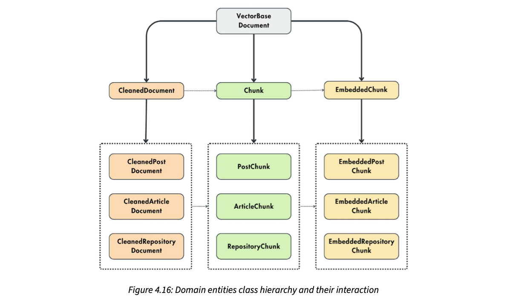
How to read this figure. Solid arrows = inheritance (top to bottom): VectorBaseDocument → the three state classes (orange CleanedDocument, green Chunk, yellow EmbeddedChunk) → nine concrete classes in the dotted boxes. Dotted arrows = data flow (left to right): a cleaned document turns into chunks, which turn into embedded chunks; e.g., CleanedArticleDocument ⇢ ArticleChunk ⇢ EmbeddedArticleChunk. Columns are states; rows are categories. (The book's text says "Figure 8.16"; it's 4.16.)
Why organise by state first? The list of states rarely changes, while the list of categories will grow. Structuring around state lets you add a category (say, YouTube transcripts) by inheriting the three base classes.
Every attribute of a cleaned document is stored as metadata (payload) in the vector DB. For a cleaned article that's always content, platform, author ID, author full name and link. An inner Config class defines the collection name, the data category, and whether to use a vector index when creating the collection:
class CleanedDocument(VectorBaseDocument, ABC):
content: str
platform: str
author_id: UUID4
author_full_name: str
class CleanedArticleDocument(CleanedDocument):
link: str
class Config:
name = "cleaned_articles" # Qdrant collection
category = DataCategory.ARTICLES
use_vector_index = False # metadata only, no vectors
# CleanedPostDocument: + image: Optional[str] = None → "cleaned_posts"
# CleanedRepositoryDocument: + name: str, link: str → "cleaned_repositories"The chunk and embedded-chunk bases add a pointer to the parent and a metadata dict; the embedded one adds the vector:
class Chunk(VectorBaseDocument, ABC):
content: str
platform: str
document_id: UUID4 # which cleaned doc it came from
author_id: UUID4
author_full_name: str
metadata: dict = Field(default_factory=dict) # e.g. chunk settings
# → PostChunk, ArticleChunk, RepositoryChunk
class EmbeddedChunk(VectorBaseDocument, ABC):
content: str
embedding: list[float] | None # the vector
platform: str
document_id: UUID4
author_id: UUID4
author_full_name: str
metadata: dict = Field(default_factory=dict) # e.g. model id, size
# → EmbeddedPostChunk, EmbeddedArticleChunk, EmbeddedRepositoryChunk
class DataCategory(StrEnum): # all categories as constants
POSTS = "posts"
ARTICLES = "articles"
REPOSITORIES = "repositories"Dabbas in Mumbai's dabbawala system: each tiffin is marked by stage (picked up, sorted, delivered) and by area (Andheri, Dadar, Churchgate). The code on the lid tells everyone what to do with it. Adding a new area means one new code, not a new system. Where it breaks: dabbas change stage physically; here each stage creates a new object of a new class.
"Why model domain objects with Pydantic?" → "Typed, validated data at every boundary: a malformed document fails at construction, not three steps later. Class hierarchies by state let each pipeline step have precise input and output types, which also lets mypy check the flow."
OVM is named after the ORM (object-relational mapping) pattern from Chapter 3. Same principles, but for embeddings and vector DBs instead of structured data and SQL tables. Like in Chapter 3, the book writes its own simple version, as an example of modular, extendable classes using OOP (object-oriented programming) best practice. Full code: llm_engineering/domain/base/vector.py.
The base class VectorBaseDocument supports CRUD on Qdrant, but the app only needs create and read, so only those are implemented; update and delete are easy to add.
T = TypeVar("T", bound="VectorBaseDocument")
class VectorBaseDocument(BaseModel, Generic[T], ABC):
id: UUID4 = Field(default_factory=uuid.uuid4) # every object gets a UUID4
@classmethod
def from_record(cls: Type[T], point: Record) -> T: # Qdrant → our model
data = dict(point.payload or {})
data["id"] = UUID(point.id, version=4)
if cls._has_class_attribute("embedding"):
data["embedding"] = point.vector or None
return cls(**data)
def to_point(self: T, **kw) -> PointStruct: # our model → Qdrant
payload = self.dict(exclude_unset=kw.pop("exclude_unset", False),
by_alias=kw.pop("by_alias", True), **kw)
point_id = str(payload.pop("id"))
vector = payload.pop("embedding", {})
if vector and isinstance(vector, np.ndarray):
vector = vector.tolist()
return PointStruct(id=point_id, vector=vector, payload=payload)Generic[T]): subclass signatures adapt to the subclass. Chunk.from_record() returns a Chunk, which helps static checkers such as mypy.from_record() turns a Qdrant data point into our Pydantic structure; to_point() turns our object into Qdrant's PointStruct: id, vector, and everything else as payload.connection instance created in the app's infrastructure layer.Our observation (not the book's). In the printed from_record, the attributes dict is built before the vector is copied into payload["embedding"], so the vector wouldn't actually reach the returned object. Our snippet above sets it on the same dict that builds the object. Since with_vectors defaults to False in the reads below, it rarely matters in this chapter.
Values invented (modelled); shape follows the book's classes. Watch id and embedding leave the payload.
bulk_insert() maps each document to a point and upserts them all into the class's collection. If the insert fails once, it assumes the collection doesn't exist, creates it, and tries again. Good practice: a private function with the logic (_bulk_insert) and a public one that handles errors and failure cases.
@classmethod
def bulk_insert(cls, docs) -> bool:
try:
cls._bulk_insert(docs)
except exceptions.UnexpectedResponse:
logger.info(f"No collection '{cls.get_collection_name()}'; creating it and retrying.")
cls.create_collection()
try:
cls._bulk_insert(docs)
except exceptions.UnexpectedResponse:
logger.error(f"Insert into '{cls.get_collection_name()}' failed.")
return False
return True
@classmethod
def _bulk_insert(cls, docs) -> None:
connection.upsert(collection_name=cls.get_collection_name(),
points=[d.to_point() for d in docs])
@classmethod
def get_collection_name(cls) -> str:
if not hasattr(cls, "Config") or not hasattr(cls.Config, "name"):
raise ImproperlyConfigured("Define a Config class with a 'name' for the collection.")
return cls.Config.nameupsert = insert or overwrite by id, so re-running the pipeline updates points instead of duplicating them (ids are content hashes for chunks, plate 38). The collection name comes from each subclass's Config; a class without one fails loudly.
bulk_find() scrolls (lists) all records of a collection, without vector search, and maps them back with from_record(). limit controls how many come back at once; offset is the ID of the point where Qdrant starts returning records. It returns the documents and the next offset.
@classmethod
def _bulk_find(cls, limit: int = 10, **kw):
offset = kw.pop("offset", None)
records, next_off = connection.scroll(
collection_name=cls.get_collection_name(), limit=limit,
with_payload=kw.pop("with_payload", True),
with_vectors=kw.pop("with_vectors", False),
offset=str(offset) if offset else None, **kw)
docs = [cls.from_record(r) for r in records]
return docs, (UUID(next_off, version=4) if next_off is not None else None)
# public bulk_find(): same, but on UnexpectedResponse logs and returns ([], None)Finally search() runs a vector similarity search for a given query embedding; Qdrant does the work in connection.search(). Same public/private split; on failure it logs and returns an empty list.
@classmethod
def _search(cls, query_vector: list, limit: int = 10, **kw):
hits = connection.search(collection_name=cls.get_collection_name(),
query_vector=query_vector, limit=limit,
with_payload=kw.pop("with_payload", True),
with_vectors=kw.pop("with_vectors", False), **kw)
return [cls.from_record(h) for h in hits]Toy collection of 23 points, limit 10 (modelled).
A translator at a bank counter: customers speak Hindi (Pydantic objects), the core banking system only accepts its own form (Qdrant points). to_point fills the bank form; from_record reads the bank's reply back in Hindi. Nobody else in the branch has to know the form's layout. Where it breaks: the translator here is generic; it knows nothing about meaning, only field names.
Qdrant stores a point = id + vector(s) + JSON payload. The OVM keeps that storage format in one place, so domain code works with typed objects and class methods like EmbeddedArticleChunk.search(vec). Swapping Qdrant for another vector DB would mean changing this one class (and the connection), not the pipeline.
"Why wrap the vector DB client?" → "To keep vendor types out of domain code, centralise error handling and collection management, and give typed CRUD per entity. It's the repository/ORM pattern applied to a vector store; it makes swapping Qdrant or adding tests with a fake much easier." Mention idempotent upserts and scroll-based pagination.
A dispatcher takes a document and applies the right handler for its data category (article, post or repository). A handler cleans, chunks or embeds a document.
class CleaningDispatcher:
factory = CleaningHandlerFactory()
@classmethod
def dispatch(cls, raw_doc: NoSQLBaseDocument) -> VectorBaseDocument:
category = DataCategory(raw_doc.get_collection_name()) # "articles" → ARTICLES
handler = cls.factory.create_handler(category)
cleaned = handler.clean(raw_doc)
logger.info("Data cleaned successfully.", data_category=category,
cleaned_content_len=len(cleaned.content))
return cleaned
class CleaningHandlerFactory:
@staticmethod
def create_handler(category: DataCategory) -> CleaningDataHandler:
if category == DataCategory.POSTS: return PostCleaningHandler()
elif category == DataCategory.ARTICLES: return ArticleCleaningHandler()
elif category == DataCategory.REPOSITORIES: return RepositoryCleaningHandler()
else: raise ValueError("Unsupported data type")Nothing fancy, but a clean interface: instead of scattering if/else on category through business logic, one class handles that choice. One class cleans any document, respecting DRY (don't repeat yourself): there's a single point to change (the book calls it a single point of failure) and easy extension. A new type means extending only the factory, not many places in the code.
ChunkingDispatcher and EmbeddingDispatcher follow the same pattern with a ChunkingHandlerFactory and an EmbeddingHandlerFactory. (Code: llm_engineering/application/preprocessing/dispatchers.py.)
clean().How they combine:
Handler interface, our strategy.Benefits: logic for each category is isolated; polymorphism replaces hundreds of if/else statements; the code is modular and extendable: a new category needs a new handler and a factory change, nothing else.
So far no actual cleaning, chunking or embedding code has been written, only entities and data flow. That's a key difference between a quick demo and a production application: demos skip structure; real systems need clean, modular, scalable code to last.
An Ola/Uber dispatcher: you request "a ride" (clean this). Only when your booking arrives does the system know if you chose Auto, Mini or Prime (category). The factory assigns a matching vehicle (handler); every vehicle implements "drive to destination" (the strategy interface), each in its own way. Adding "Bike taxi" means registering a new vehicle type, not rewriting the booking app. Where it breaks: the factory here is a plain if/elif; a registry dict would avoid even that edit.
"Explain factory vs strategy with an example." → "Strategy: interchangeable algorithms behind one interface, e.g. clean() for posts, articles, repos. Factory: the one place that decides which concrete strategy to instantiate from runtime data. The caller only knows the interface. Adding a category = new strategy class + one factory entry; Open/Closed principle." Same shape as routing tool calls to tool handlers in an agent.
Handlers map one-to-one onto the domain: every entity has its own handler. Nine handler classes in total, under three base interfaces:
CleaningDataHandler()ChunkingDataHandler()EmbeddingDataHandler()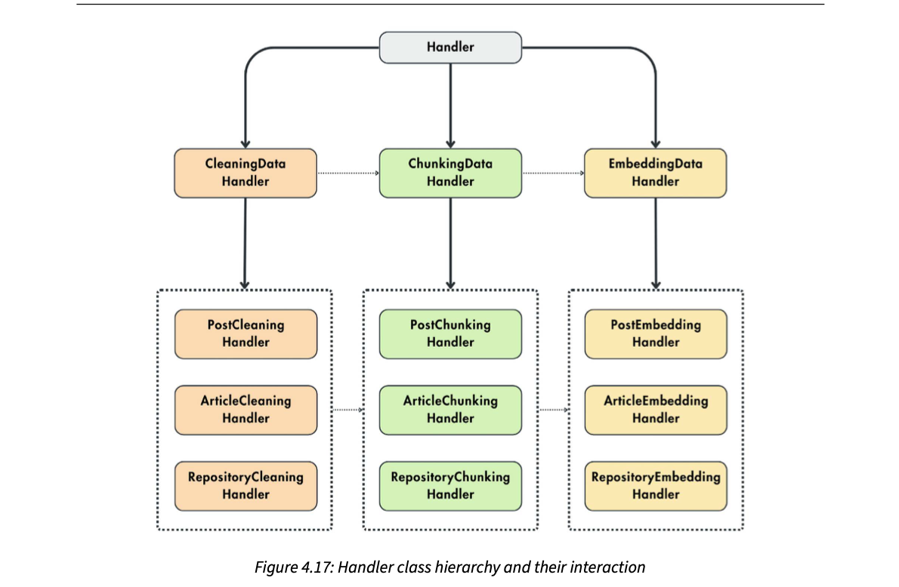
How to read this figure. Same layout as Figure 4.16 (plate 34), on purpose. Handler at the top; three base handlers (orange CleaningDataHandler, green ChunkingDataHandler, yellow EmbeddingDataHandler); nine concrete handlers below: Post/Article/Repository × Cleaning/Chunking/Embedding. Solid arrows = inheritance; dotted arrows = the order data flows through them. Each handler's output type is the next column's entity: e.g., ArticleCleaningHandler produces a CleanedArticleDocument, which ArticleChunkingHandler consumes. (Book text says "Figure 8.17"; it's 4.17. Code: llm_engineering/application/preprocessing.)
The strategy interface is generic over input and output types:
DocumentT = TypeVar("DocumentT", bound=Document)
CleanedDocumentT = TypeVar("CleanedDocumentT", bound=CleanedDocument)
class CleaningDataHandler(ABC, Generic[DocumentT, CleanedDocumentT]):
@abstractmethod
def clean(self, data_model: DocumentT) -> CleanedDocumentT: ...
class ArticleCleaningHandler(CleaningDataHandler):
def clean(self, raw: ArticleDocument) -> CleanedArticleDocument:
parts = [p for p in raw.content.values() if p] # drop empty sections
return CleanedArticleDocument(
id=raw.id,
content=clean_text(" #### ".join(parts)), # join sections, then clean
platform=raw.platform, link=raw.link,
author_id=raw.author_id, author_full_name=raw.author_full_name)
# PostCleaningHandler and RepositoryCleaningHandler: same idea,
# clean_text(" #### ".join(raw.content.values())) + copy the other fieldscontent is a dict of sections (from the Ch.3 crawlers). The handler joins them with a " #### " separator into one string, then cleans it. The article handler also drops empty sections.clean_text() for simplicity. In a real setup you'd optimise a different cleaning function per category; with the strategy pattern you just swap the function inside that handler.clean_text() applies the same steps described in Chapter 5's "Creating an instruction dataset" section (the book doesn't repeat them). What matters here is automating and integrating the logic: once operationalised, all cleaned data for fine-tuning is read from the logical feature store, the single source of truth.Toy article; clean_text effects illustrative (modelled: whitespace, non-ASCII/emoji removal as in plate 25).
Three tailors under one shop sign: each specialises (kurta, shirt, blouse) but all accept the same order slip and return a finished garment with the same label format. Where it breaks: today all three use the same stitching (clean_text); the separation pays off only when they start to differ.
"Isn't nine classes over-engineering?" → "For a demo, yes. For a pipeline that will add data sources and tune per-source processing, the cost is small and each change stays local and testable. The trick is keeping the base interfaces generic so mypy checks that each step's output type is the next step's input type."
The ChunkingDataHandler strategy exposes a metadata property that gathers all chunking parameters into one dict, so they're easy to log to ZenML for tracking and debugging (that's what Figure 4.14 showed). It takes cleaned documents and returns chunk entities.
class ChunkingDataHandler(ABC, Generic[CleanedDocumentT, ChunkT]):
@property
def metadata(self) -> dict:
return {"chunk_size": 500, "chunk_overlap": 50} # defaults
@abstractmethod
def chunk(self, data_model: CleanedDocumentT) -> list[ChunkT]: ...It overrides metadata with what article chunking needs: a minimum and maximum chunk length (characters). chunk() splits the cleaned content and builds ArticleChunk entities. Each chunk's id is the MD5 hash of its content, so two identical chunks get the same id and are de-duplicated for free.
class ArticleChunkingHandler(ChunkingDataHandler):
@property
def metadata(self) -> dict:
return {"min_length": 1000, "max_length": 1000}
def chunk(self, doc: CleanedArticleDocument) -> list[ArticleChunk]:
out = []
for piece in chunk_article(doc.content, min_length=self.metadata["min_length"],
max_length=self.metadata["max_length"]):
digest = hashlib.md5(piece.encode()).hexdigest() # content hash
out.append(ArticleChunk(id=UUID(digest, version=4), content=piece,
platform=doc.platform, link=doc.link,
document_id=doc.id, author_id=doc.author_id,
author_full_name=doc.author_full_name,
metadata=self.metadata))
return outchunk_article() does two things:
max_length; then, if the chunk is at least min_length, it's kept and a new chunk starts. The last chunk is kept only if it reaches min_length.SENT_END = r"(?<!\w\.\w.)(?<![A-Z][a-z]\.)(?<=\.|\?|\!)\s" # the book's pattern
def chunk_article(text: str, min_length: int, max_length: int) -> list[str]:
chunks, cur = [], ""
for s in (x.strip() for x in re.split(SENT_END, text)):
if not s:
continue
if len(cur) + len(s) <= max_length:
cur += s + " " # still fits: keep packing
else:
if len(cur) >= min_length:
chunks.append(cur.strip()) # long enough: keep it
cur = s + " " # start a new chunk
if len(cur) >= min_length:
chunks.append(cur.strip())
return chunksRegex parts: (?<!\w\.\w.) = not right after something like "e.g."; (?<![A-Z][a-z]\.) = not after a title like "Dr." or "Mr."; (?<=\.|\?|\!) = must be right after . ? or !; \s = the space where we cut.
The same regex and packing logic, ported to JavaScript. Edit the text or the limits. With min = max (as in the book), notice what happens to a short tail and to an undersized chunk.
Our observation. Because a chunk is only kept if it reaches min_length, and with min = max = 1000 that means nearly exactly full, any chunk that closes short is silently dropped, including the final tail of most articles. Also, a single sentence longer than max_length can't be split further: it becomes its own chunk that is larger than max_length (for articles, the token limit of the model isn't checked here). Try it above. (The book doesn't discuss these edge cases.)
PostChunkingHandler and RepositoryChunkingHandler (in chunking_data_handlers.py) look like the article one but call a more generic chunk_text(), a two-step process:
RecursiveCharacterTextSplitter with separator "\n\n" tries to split into paragraphs; if there are none, or a paragraph is too long, it cuts at chunk_size characters. Overlap here is 0.SentenceTransformersTokenTextSplitter, which respects the embedding model's maximum input length in tokens. The chunk_overlap is applied only at this stage, after we know the pieces are small enough.def chunk_text(text: str, chunk_size: int = 500, chunk_overlap: int = 50) -> list[str]:
by_paragraph = RecursiveCharacterTextSplitter(
separators=["\n\n"], chunk_size=chunk_size, chunk_overlap=0).split_text(text)
token_splitter = SentenceTransformersTokenTextSplitter(
chunk_overlap=chunk_overlap,
tokens_per_chunk=embedding_model.max_input_length, # 256 for MiniLM
model_name=embedding_model.model_id)
return [c for part in by_paragraph for c in token_splitter.split_text(part)]The result respects both the chunk parameters and the model's max input length.
A repository README paragraph of 500 characters of code might be ~180 tokens: fits in MiniLM's 256. But a 500-character line of minified JSON can tokenise to 300+ tokens. The character splitter says "fine", the token splitter catches it and splits into 256-token pieces with 50-token overlap, so nothing is silently truncated by the model (Sentence Transformers truncates inputs beyond max length).
Packing sweets into fixed-size boxes at a mithai shop: put whole pieces in until the next one won't fit, then close the box (sentence packing). For the token splitter, the box has a strict weight limit checked on a scale, not just by eye. Where it breaks: the shop wouldn't throw away a half-full last box; chunk_article does, if it's under min_length.
"How do you chunk different content types?" → "Structure-aware first: sentences or paragraphs for prose, larger units for code, then enforce the embedding model's token limit with a token-based splitter, adding overlap at that stage. Use content hashes as chunk ids so re-ingestion upserts and duplicates collapse. And log the chunk parameters with each run."
Embedding handlers differ: the base EmbeddingDataHandler holds most of the logic. Why? We want to batch as many samples as possible into each model call. On a GPU, batched samples are processed independently and in parallel, so batching can speed inference up 10× or more, depending on batch size and hardware.
embedder = EmbeddingModelSingleton()
class EmbeddingDataHandler(ABC, Generic[ChunkT, EmbeddedChunkT]):
def embed(self, chunk: ChunkT) -> EmbeddedChunkT: # single item
return self.embed_batch([chunk])[0]
def embed_batch(self, chunks: list[ChunkT]) -> list[EmbeddedChunkT]:
texts = [c.content for c in chunks]
vectors = embedder(texts, to_list=True) # ONE model call
return [self.map_model(c, cast(list[float], v))
for c, v in zip(chunks, vectors, strict=False)]
@abstractmethod
def map_model(self, chunk: ChunkT, vector: list[float]) -> EmbeddedChunkT: ...embed() exists for one data point; it just calls embed_batch with a list of one.embed_batch() gathers the contents, calls the model once, and maps each (chunk, vector) pair to an embedded entity.map_model() is the only abstract part: each category customises how to build its embedded entity.The article version only implements map_model(): copy the chunk's fields, add the vector, and record the model details in metadata:
class ArticleEmbeddingHandler(EmbeddingDataHandler):
def map_model(self, chunk: ArticleChunk, vector: list[float]) -> EmbeddedArticleChunk:
return EmbeddedArticleChunk(
id=chunk.id, content=chunk.content, embedding=vector,
platform=chunk.platform, link=chunk.link, document_id=chunk.document_id,
author_id=chunk.author_id, author_full_name=chunk.author_full_name,
metadata={"embedding_model_id": embedder.model_id,
"embedding_size": embedder.embedding_size,
"max_input_length": embedder.max_input_length})Those three metadata keys are exactly what Figure 4.15 displayed: model id, size 384, max input length 256.
A wrapper over Sentence Transformers' SentenceTransformer. Wrapping third-party packages is good practice: to change the tool, you edit only the wrapper, not the whole codebase. The model id comes from Settings, so you can test several embedding models by changing configuration, not code. That's why the book doesn't insist on a specific model: the best one depends on your use case, data, hardware and latency; a configurable class lets you experiment until you find it.
class EmbeddingModelSingleton(metaclass=SingletonMeta):
def __init__(self, model_id: str = settings.TEXT_EMBEDDING_MODEL_ID,
device: str = settings.RAG_MODEL_DEVICE, cache_dir: Optional[Path] = None):
self._model_id = model_id
self._model = SentenceTransformer(model_id, device=device,
cache_folder=str(cache_dir) if cache_dir else None)
self._model.eval() # inference mode
@property
def model_id(self) -> str: return self._model_id
@cached_property
def embedding_size(self) -> int: # one dummy pass, then cached
return self._model.encode("").shape[0]
@property
def max_input_length(self) -> int: return self._model.max_seq_length
@property
def tokenizer(self) -> AutoTokenizer: return self._model.tokenizer
def __call__(self, text: str | list[str], to_list: bool = True):
try:
vecs = self._model.encode(text)
except Exception:
logger.error(f"Embedding failed for {self._model_id=} and {text=}")
return [] if to_list else np.array([])
return vecs.tolist() if to_list else vecs.eval() puts the model in inference mode.embedding_size runs a dummy forward pass on an empty string to read the output size, and @cached_property stores it so the pass happens only once.max_input_length is the model's max_seq_length (256 for MiniLM), used by the token splitter in plate 38.__call__ makes the object callable like a function; failures are logged and return an empty result instead of crashing.The singleton pattern is a creational pattern that guarantees a class has only one instance and gives a global access point to it. SingletonMeta makes every EmbeddingModelSingleton() call return the same object. This suits ML models: load once into memory, then use anywhere. Without it you risk reloading the model every time, or loading several copies, causing memory problems. It also makes properties like embedding_size cheap: the dummy forward pass runs once for the whole program.
Assumptions (modelled): 20 ms fixed overhead per model call + 2 ms per item on GPU; model load 3 s and 90 MB (MiniLM-sized); without a singleton, imagine each of 9 handlers loading its own copy. 2,373 is the book's chunk count.
A pressure cooker in a hostel kitchen. Cooking one bowl of dal at a time wastes most of the time on heating up (per-call overhead): cook ten bowls per whistle (batching). And you don't buy a new cooker every time someone wants dal: one shared cooker for the whole hostel (singleton). Where it breaks: one shared cooker becomes a bottleneck when many cooks need it at once; a singleton model in a multi-threaded server needs care too.
Each model call has fixed costs: Python overhead, moving data to the GPU, launching kernels. A batch shares those costs across many inputs and fills the GPU's parallel units with one big matrix multiply. The singleton avoids paying the load cost (reading weights from disk into RAM/VRAM) more than once per process.
"How would you make embedding ingestion fast?" → "Batch inputs per model call (sized to GPU memory), load the model once per worker (singleton or app-level dependency), run on GPU if volume is high, and parallelise across workers for very large corpora. Record model id, dimension and max length with every vector so you know when re-embedding is needed." In a realtime agent, the same singleton idea keeps the embedder warm so query embedding adds only milliseconds.
The chapter opened with a gentle introduction to RAG: why and when to use it. It explained how embeddings and vector DBs work, the foundation of any RAG system. It then looked at advanced RAG and why it's needed, showing which parts of RAG can be optimised and proposing popular techniques for text data.
Next it applied all of that to designing the LLM Twin's RAG feature pipeline: it compared batch and streaming pipelines and briefly introduced CDC, a pattern for syncing two databases.
Finally it walked step by step through the implementation: integrating ZenML as orchestrator, designing the domain entities, implementing an OVM module, and using software patterns (abstract factory and strategy) to build a modular, extendable layer that cleans, chunks and embeds each document according to its data category.
This chapter covered only the ingestion pipeline, one component of a RAG app. Chapter 9 builds the retrieval and generation parts and the inference pipeline. First, Chapter 5 uses the collected data to build a custom dataset and fine-tune an LLM.
| Term | Meaning in one line |
|---|---|
| RAG | Retrieval-augmented generation: retrieve relevant data, add it to the prompt, generate. |
| Parameterized knowledge | What an LLM learned into its weights during training; frozen at a cutoff. |
| Hallucination | A confident, fluent, false answer. |
| Ingestion / retrieval / generation pipeline | The three modules of vanilla RAG: fill the vector DB; find top-K; build prompt and call the LLM. |
| Chunking | Splitting cleaned documents into smaller, semantically coherent pieces under the model's input limit. |
| Embedding | Dense vector in a continuous space where closeness = similarity of meaning. |
| Cosine similarity / distance | (A·B)/(‖A‖‖B‖), from −1 to 1; distance = 1 − similarity. |
| Training-serving skew | Processing inputs differently at training (ingestion) and serving (query) time, giving wrong results. |
| UMAP / t-SNE / PCA | Dimensionality reduction methods; UMAP keeps geometry better, t-SNE is more stochastic. |
| One-hot / feature hashing | Classical encodings: huge and meaningless vs. compact but colliding and uninterpretable. |
| MTEB | Massive Text Embedding Benchmark leaderboard on Hugging Face for choosing embedding models. |
| CLIP | Model embedding text and images into one shared space. |
| Vector DB vs vector index | DB adds CRUD, filtering, scaling, backups, security on top of an index like FAISS. |
| ANN | Approximate nearest neighbour search: slightly inexact, much faster. |
| HNSW / PQ / LSH / random projection | Multi-layer graph search / sub-vector compression / similarity buckets / random dimensionality reduction. |
| Advanced RAG | Optimisations at pre-retrieval, retrieval and post-retrieval stages. |
| Sliding window / small-to-big | Chunk overlap / embed small units, send a bigger surrounding window to the LLM. |
| Query routing / rewriting / expansion / self-query | Choose source or template / reformulate / add related terms / extract filters from the query. |
| HyDE | Hypothetical document embeddings: retrieve with an LLM-written hypothetical answer plus the query. |
| Instructor model | Embedding model steered by an instruction, an alternative to fine-tuning. |
| Hybrid search (alpha) | Keyword + vector search merged with a weight. |
| Filtered vector search | Vector search restricted by metadata filters before or after. |
| Bi-encoder / cross-encoder / re-ranking | Separate embeddings (fast) / joint pair scoring (accurate, costly) / re-sort top-N, keep top-K. |
| Feature store (logical) | Qdrant (online) + ZenML artifacts (offline): the only place training and inference read features from. |
| Batch vs streaming pipeline | Scheduled bulk processing vs continuous per-event processing. |
| CDC | Change data capture: replicate source CRUD operations to a target; push or pull; timestamp, trigger or log-based. |
| ZenML step / pipeline / artifact | Unit of work / DAG of steps / versioned step output. |
| Pydantic Settings | Typed config class loaded from .env with validation. |
| DDD | Domain-driven design: domain entities at the core. |
| OVM | Object-vector mapping: ORM-like base class mapping Pydantic objects to Qdrant points. |
| Dispatcher / abstract factory / strategy | Routes by category / creates the right handler / interchangeable algorithms behind one interface. |
| Singleton | One shared instance per process, used to load the embedding model once. |
| GIL | Python's Global Interpreter Lock: threads help I/O-bound work, processes help CPU-bound work. |
| Name | What it does with the idea |
|---|---|
| OpenAI GPT-4o | The book's example of a model with a training cutoff (Oct 2023) that needs RAG for newer facts. |
| LangFuse | Prompt management: versioning prompt templates. |
| Sentence Transformers / Hugging Face | Load and run embedding models (all-MiniLM-L6-v2, all-mpnet-base-v2, clip-ViT-B-32) and cross-encoders. |
| Word2Vec, GloVe, BERT, RoBERTa, ResNet, CLIP | Embedding model families for words, text, images, and text+image. |
| UMAP, t-SNE, PCA (scikit-learn) | Project embeddings to 2D/3D for visualisation. |
| MTEB leaderboard | Compare embedding models by task. |
| InstructorEmbedding (hkunlp/instructor) | Instruction-steered embeddings. |
| FAISS | Standalone vector index library (search only, no DB features). |
| Qdrant | The LLM Twin's vector DB: stores cleaned docs (payload only) and embedded chunks (with HNSW index); supports filtering, scroll and search. |
| MongoDB | The LLM Twin's data warehouse holding raw crawled documents. |
| ZenML | Orchestrates the feature pipeline; versions artifacts; shows run metadata in its dashboard. |
| Pydantic / Pydantic Settings | Typed domain entities and validated config. |
| LangChain text splitters | RecursiveCharacterTextSplitter and SentenceTransformersTokenTextSplitter for chunking. |
| Unstructured | Named with LangChain and Sentence Transformers as the GenAI tools for the small-data batch quadrant. |
| Kafka, Redpanda, RabbitMQ | Event streaming platforms / queue for streaming pipelines and CDC. |
| Flink, Bytewax, Beam, Spark Streaming, Kafka Streams | Stream processing engines (Fig 4.10). |
| Pandas, Polars, Spark, Dask, Ray, BigQuery, Snowflake | Batch processing tools from small to big data (Fig 4.10). |
| TikTok, Stripe, PayPal, Netflix | Examples: real-time recommenders, real-time fraud detection, wasteful nightly batch predictions. |
| Confluent | Its blog post is the book's recommended CDC reading. |
| Medium, Substack | Platforms the Ch.3 crawler collects articles from. |
| Poe the Poet / Poetry, mypy | Task runner for run-feature-engineering-pipeline; static type checker helped by generics. |
Common production equivalents: Debezium or MongoDB change streams for log-based CDC; pgvector, Weaviate, Milvus or Pinecone as alternative vector stores; Cohere or BGE rerankers as cross-encoders; reciprocal rank fusion (RRF) as an alternative to alpha-weighted hybrid scoring.
Hallucinations and old/private information. Reasons: private data you have no right to train on, new data appearing constantly, and the cost of training/fine-tuning.
Extraction, cleaning, chunking, embedding, loading. The embedding is the index for similarity search; the metadata (content, source URL, publish date…) is what you read to build the prompt and to filter.
They're in different vector spaces, so distances are meaningless and retrieval breaks: training-serving skew. Same functions, models and hyperparameters on both sides.
Cosine = 1 (same direction); Euclidean = 5. Cosine ignores length.
Each token becomes a 10,000-long vector, so 1,000,000 inputs, all equidistant, carrying no similarity. Embeddings give a small fixed dimension with learned meaning.
A DB adds CRUD, metadata filtering, scalability, real-time updates, backups, integrations and security on top of the ANN index.
Points sit in a multi-layer graph: sparse long links on top, all points with short links at the bottom. Search greedily moves toward the query on the top layer and drops down when no neighbour is closer. It repeats to layer 0, visiting a tiny fraction of points, at the cost of occasionally missing the exact nearest.
Hybrid search (keyword + vector), since vector search is weak on exact identifiers; or a metadata filter if the id is stored as metadata.
It needs one forward pass per (query, document) pair and nothing can be precomputed; over millions of chunks that's far too slow. Use it to re-rank the top-N from a bi-encoder.
Minutes of delay are acceptable and data is small (thousands of records), so running every minute works; and simplicity: streaming is about twice as complex to build and maintain.
The full-scan batch job only inserts/updates, so the article's chunks stay in Qdrant and remain retrievable. Trigger-based or log-based CDC captures the DELETE and propagates it; timestamp-based would not.
The warehouse is shared and generic; use-case-specific processing there leads to a spaghetti warehouse. Features must be read only from the feature store, and Qdrant's payload store works as a NoSQL DB.
Handlers are strategies behind clean()/chunk()/embed(); the factory creates the right one from the category known only at runtime; the dispatcher calls it. A new category needs new handlers + a factory branch (+ enum value and entity classes), nothing else.
MD5 of content makes identical chunks share an id, so upserts de-duplicate and re-runs don't duplicate. Batching shares per-call overhead and uses GPU parallelism (10×+). The singleton loads the model once, avoiding repeated loads and memory blow-ups, and caches properties like embedding_size.
The chapter ends with an invitation to the book's Discord community (pdf p204); p205 is blank.